|
International Virtual Observatory Alliance |
|
International Virtual Observatory Alliance |
unknown
This document defines a standard modelling language, or meta-model, for expressing data models in the IVOA. Adopting such a uniform language for all models allows these to be used in a homogeneous manner and allows a consistent definition of reuse of one model by another. The particular language defined here includes a consistent identification mechanism for models which allow these to be referenced in an explicit and uniform manner also from other contexts, in particular from other IVOA standard formats such as VOTable.
The language defined in this specification is named VO-DML (VO Data Modeling Language). VO-DML is a conceptual modeling language that is agnostic of serializations, or physical representations. This allows it to be designed to fit as many purposes as possible. VO-DML is directly based on UML, and can be seen as a particular representation of a UML2 Profile. VO-DML is restricted to describing static data structures and from UML it only uses a subset of the elements defined in its language for describing "Class Diagrams". Its concepts can be easily mapped to equivalent data modelling concepts in other representations such as relational databases, XML schemas and object-oriented computer languages.
VO-DML has a representation as a simple XML dialect named VO-DML/XML that must be used to provide the formal representation of a VO-DML data model. VO-DML/XML aims to be concise, explicit and easy to parse and use in code that needs to interpret annotated data sets.
VO-DML as described in this document is an example of a domain specific modeling language, where the domain here is defined as the set of data and meta-data structures handled in the IVOA and Astronomy at large. VO-DML provides a custom representation of such a language and as a side effect allows the creation and use of standard compliant data models outside of the IVOA standards context.
Working Groups: Data Model
This version:
Latest version:
http://ivoa.net/documents/VODML/20180905/index.html
Previous version(s):
http://ivoa.net/documents/VODML/20180519/index.html
Status of This Document
This document has been produced by the Data Model Working
Group.
It has been reviewed by IVOA Members and other interested parties, and
has been endorsed by the IVOA Executive Committee as an IVOA
Recommendation. It is a stable document and may be used as reference
material or cited as a normative reference from another document. IVOA's
role in making the Recommendation is to draw attention to the
specification and to promote its widespread deployment. This enhances
the functionality and interoperability inside the Astronomical
Community.
A list of current IVOA Recommendations and other technical documents can be found at http://www.ivoa.net/Documents/.
The key element for achieving interoperability among actors sharing data is the definition of shared Standard Data Models.
The Wikipedia entry for Standard Data Model states:
A standard data model or industry standard data model (ISDM) is a data model that is widely applied in some industry, and shared amongst competitors to some degree. They are often defined by standards bodies, database vendors, or operating system vendors.
When in use, they enable easier and faster information sharing because heterogeneous organizations have a standard vocabulary and pre-negotiated semantics, format, and quality standards for exchanged data. The standardization has an impact on software architecture as solutions that vary from the standard may cause data sharing issues and problems if data is out of compliance with the standard.1
Interoperable modeling is a much more challenging enterprise than usual application- or organization-centric data modeling in that the standard data models need to be adopted in many different contexts, like software applications, database management systems, serialization formats, web services, and across different organizations, programming languages, operating systems. For this reason, stricter rules should be imposed on standard data models so that a broad range of applications can be supported.
This specification has three main goals:
Provide a set of formal rules for data modeling in the IVOA in order to ensure that the resulting models can be consistently used by many different actors, from data publishers to end users, including application developers, and using different technologies.
Provide a standard, machine-readable representation for IVOA Data Models.
Define a portable Data Model reference format for pointing to Data Models and the elements they define.
Item 3 is particularly important because it takes into account the existing file formats in use in Astronomy that cannot be replaced by XML or other common languages for representing data models. So, while VO-DML makes indeed use of XML, it also defines standardized portable pointers that can be used in many serialization formats to refer to Data Models and their elements.
Section 2 more formally and technically introduces how VO-DML is relevant to the IVOA from a Data Integration perspective. Section 3 describes the contents of this specification and some non-normative aspects. Section 4 contains the first normative part of this specification, describing the details of the modelling language. Section 5 describes a special data model, named 'ivoa', that predefines a number of standard primitive types and some types representing IVOA-like quantities (value with unit). All other IVOA data models SHOULD use this model, as it allows one to have a consistent set of the types at the leaves of the type definition hierarchies. Section 6 contains guidelines for the proper data modeling process in the IVOA, endorsed by the IVOA Data Modeling Working Group.
Various appendices provide supplementary material that may help in using this specification.
Appendix A contains a table that for each important VO-DML concept lists the corresponding UML concept with hyperlink and short comment. This could be used as a summary of the main specification. One may wish to compare VO-DML and VO-DML/Schema to alternative languages such as RDF-Schema or OWL [19], or similar approaches to designing domain-specific modeling languages such as Ecore [18].
A short overview how one might map VO-DML data models to meta-models for application specific serialization and/or instantiation formats is given in Appendix B. Such a mapping can be considered physical models implementing a logical model defined in VO-DML. Examples discussed there are mappings to XSD [24], to the relational database model and Java. That appendix also contains a discussion on the possible need for and a design of an application neutral serialization language specifically tailored to VO-DML, referred to as VO-DML/I.
Serialization of Data Model instances in VOTable format is provided in a related document [3]. It is important to note, however, that any number of serialization strategies can be created for any number of corresponding file formats using the portable references (vodml-id) defined in this specification. Such strategies only need to be defined once and for all for each format, and apply to all Data Models, as long as they are formally described in a VODML/XML document.
Appendix C discusses a possible set of rules for deriving the vodml-id of a model element from the actual model.
Appendix D introduces the sample data model that is used in this specification.
This specification defines a language for expressing data models for the IVOA and is the core of the mapping specification language for expressing how data model instances are stored in VOTables and other tabular serializations such as TAP.
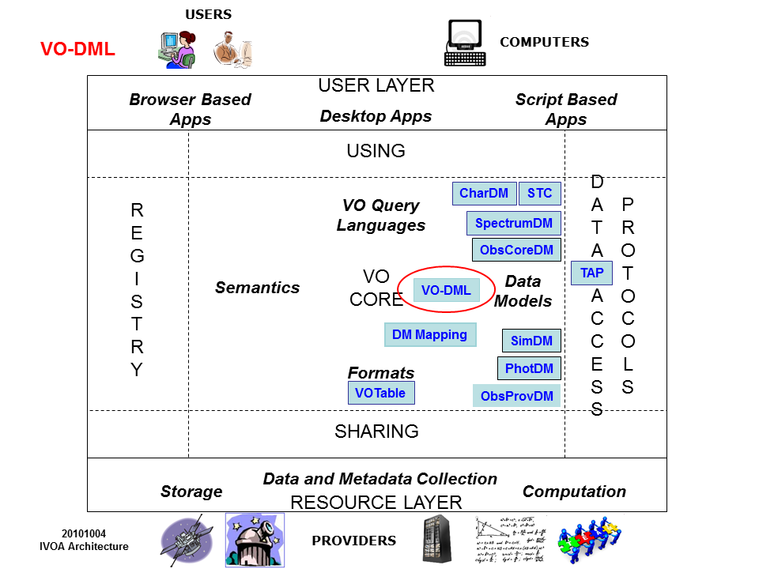
Note that in the diagram not all existing DMs are represented. This specification is supposed to apply to all models.
The home page of the IVOA web site states that:
The Virtual Observatory (VO) is the vision that astronomical datasets and other resources should work as a seamless whole.2
While Wikipedia states that:
Virtual observatory (VO) is a collection of interoperating data archives and software tools which utilize the internet to form a scientific research environment in which astronomical research programs can be conducted.
These characterizations of the VO are very similar to the various definitions of data integration one encounters when searching the web, such as
Data integration involves combining data residing in different sources and providing users with a unified view of these data.3
Data integration involves combining data from several disparate sources, which are stored using various technologies and provide a unified view of the data4.
And from Chapter 9 in [1], which we will use in much of this introduction
The goal of data integration is to provide a uniform access to a set of autonomous and possibly heterogeneous data sources in a particular application domain.
In fact, the Virtual Observatory can be seen as what [1] calls a virtual data integration effort: the data remain in their data sources; the integration is performed only when the data is needed, say during a query. The unified view of the data in such data integration projects is provided by what is commonly called a global schema. The global schema aims to represent, in a unified view, the information contained in the source databases pertaining to a certain domain, or universe of discourse.
The goal of data integration projects such as the VO is to provide end users with a view of the source databases based on this schema. For example, users could be allowed to submit queries phrased in terms of this schema rather than in terms of the schemas of the underlying databases. Or serialized data sets should be expressed using terms of the global schema. Or it should be possible to write code against programming APIs designed according to the global schema.
The central problem of both IVOA and data integration in general is that the source databases generally do not conform to any common schema one might wish to design. The source databases have generally been created to serve the purposes of the entity/organization that owns them, without coordination between the different providers to align their designs. This shows itself in two ways: First is what one might call technical heterogeneity; source databases are built using different technologies or use different formats. Experience in the VO shows that this can be solved: owners of the data are willing to describe their data holdings in some standardized format and abide by some standard access protocols (e.g. TAP), or send their data over the net in some standardized serialization format (e.g. VOTable).
What is much harder to solve and is the target of the current work as well as the related Mapping to VOTable specification [3], is what is called in [1] semantic heterogeneity. Source databases contain information from possibly overlapping but not identical subsets of the whole problem domain, and even where there is overlap in contents, the design will generally be different. The source databases were generally built according to local specifications, targeting different subsets of the overall domain (Astronomy for the VO), and the designs use particular views of the schema optimized for particular applications and/or implementations.
So even if all source databases are relational, the actual data models they use are different and data providers will in general be unwilling or unable to change the structural design of their data holdings, or the contents of the serializations, to conform to some uniform, global design. Instead a mapping must be provided between the source schemas and the global schema. In the literature the components providing this mapping are often referred to as mediators.
The link between the global schema and the various data models defined in the IVOA is easy to see. Similar to global schemas, data models in the IVOA have a particular goal, namely to facilitate interoperability of distributed data sources. They can provide serialization formats for the results of protocols such as the spectrum data model in SSAP [23] or can provide a common relational schema as in ObsCore+ObsTAP [24].
Mediators are not as easily identified or isolated, but they must be hidden somewhere inside the different implementations of the various IVOA access protocols. For example in an implementation of SSAP a special code component may translate some native representation of a spectrum into one of the few allowed forms allowed by the protocol. And in ObsTAP one may be able to define database views on the native schema to represent the ObsCore table(s).
The two examples mentioned above, SpectrumDM+SSAP and ObsCore+ObsTAP, are not the only, or even most common data integration patterns in the IVOA. What distinguishes these from other approaches is that a data model is represented faithfully, i.e. the protocol serializations produced by the protocol, or the database design exposed by the data providers, is basically a one-to-one representation of the common data model defined by the standard. Especially ObsTAP is a nice example of a pattern that is equivalent to the data integration pattern called global-as-view. The global schema can sometimes literally be implemented as a collection of database views on the source schemas. These views show how the entities from the global schema are represented in and how they can be extracted from the source database5.
In the IVOA this pattern is still rare. The more common way by which one may obtain knowledge about the contents of some data source in standardized terms is through annotations. Data sets are represented in some standardized format that includes hooks for associating terms from a standardized source of semantic information. In the IVOA the main representations that allow this are the metadata annotation elements in VOTable [4] and the TAP_SCHEMA6 in the TAP specification [5]. Each of these contains hooks for linking certain data components to the UCD semantic vocabulary (see [6] and [7]). Associating a term from that controlled list to say a FIELD (VOTable) or column (TAP) indicates that those elements represent the concept identified by the term.
It was recognized that apart from the controlled vocabularies, also the various data models defined for varying purposes within the IVOA contain semantic information. Maybe it would be possible to provide a mechanism similar to the UCD annotations that would allow one to associate elements from a data source with elements inside these models. The utype attribute was defined in VOTable to represent such "pointers into a data model".
What these were supposed to point at was left unspecified in the VOTable specification, the current specification provides that definition. This specification defines a formal language for defining IVOA data models. Data models defined in this language contain explicitly identified data model elements that can be formally referenced using a namespace-like mechanism for avoiding name clashes among different Data Models.7
The language defined here is called VO-DML, which stands for Virtual Observatory Data Modeling Language. VO-DML is designed to satisfy the following requirements. It should
Support the specification of serialization strategies for serializing instances of data models into different file formats;
Be rich enough to represent existing IVOA data models;
Support model reuse;
Be implementation-neutral, but...
Be flexible enough to be mapped to important physical representations, in particular XML schema, relational model (TAP), object-oriented languages (Java, Python...), and at the same time...
Be as minimal as possible, avoiding redundancy, adding restrictions where possible, with the aim of simplifying the work of modelers by offering few and “obvious” choices;
Be based on accepted standards for data modeling, but ...
Not rely on external modeling tools8, but be sufficiently compatible with them so that such tools MAY be used when representing models;
Support runtime model interpretation;
The data modeling language defined in this document fulfills these requirements.
The language is explicitly implementation neutral, but has been successfully used as the source for transformation scripts that produce various representations such as a fully hyper-linked HTML document and Java classes used to infer data model instances form suitably mapped VOTables9. The formal representation language is XML that can be easily hand coded, but also has a non-normative UML ([12], [13]) representation that can be translated into VO-DML automatically. Finally the model representation language can be used in validating VOTables annotated using vodml-ids.
Applications making use of VO-DML XML descriptions can be agnostic of the actual models, but can successfully retrieve, parse and load those at runtime.
The VO-DML specification consists of a conceptual part and a model definition language. The latter defines an XML format and this specification states that all data models in the IVOA MUST have a representation in that format. The conceptual part of the spec goes by the name of VO-DML, short for VO Data Modeling Language. The serialization language goes by the name of VO-DML/Schema and an XML document conforming to this standard defines a data model, and is referred to as the VO-DML/XML representation of that data model.
The language can be expressed graphically using a subset of UML. For this purpose a UML Profile10 is defined that represents the VO-DML concepts in UML. This is referred to as VO-UML, but its definition is informative, not a normative part of the spec. These four different representations will be discussed in more detail in the next section. Section 3 then defines each modeling concept in detail and illustrates their usages in the different representations. Section 4 defines normative rules how to define data models in the IVOA and gives some non-normative best practices guide lines. Auxiliary material is contained in the appendices.
This specification distinguishes between the conceptual meta-model, VO-DML and the XML based serialization language for expressing data models, referred to as VO-DML/XML. The latter is defined using an XML schema together with a Schematron11 file defining further constraints and is referred to in combination as VO-DML/Schema. The relation between VO-DML and VO-DML/XML is equivalent to the relation between a UML [12] (see also [16]) model and its representation as a file in the XML serialization format XMI [15]. VO-DML is directly derived from UML in the sense that most of its modeling constructs have a counterpart in UML. One can in fact interpret VO-DML as a UML Profile [16], a domain specific "dialect" of UML. This is made explicit in this specification by providing a (non-normative) UML representation of VO-DML, referred to as VO-UML.
These different components of the specification are discussed in some more detail in the next subsections.
For most use cases a VO-DML data model must be serialized in a computer readable format. The serialization language to be used for this is referred to as VO-DML/XML. A VO-DML/XML document is an XML document that must conform to a formal syntax defined by an XML schema12, vo-dml.xsd13 and must further validate under the rules defined in an associated Schematron file, vo-dml.sch.xml14. These files implement all the concepts described in section 4 The schema files are self-documented as much as possible, and in what follows only a few details of the overall design, focusing on technical aspects of the implementation, are given.
VO-DML/XML is a simple representation of a VO-DML model as an XML document. The fact that this specification defines a custom designed serialization language rather than using some existing language could be seen as an unnecessary complication. One could for example also consider using XMI as the standard for serializing VO-DML models. However, XMI is a rather unwieldy format that hides many of the features that are made explicit in this specification. Hence as a language from which to derive information of the model without very sophisticated tools it is ill-suited. Also one should not assume all users have access to a UML modeling tool that can support all the UML modeling features needed to create VO data models, and hand-editing XMI is nigh impossible. It is also foreseen that users may want to derive models from other representations (e.g. XML schema, or RDF) and XMI as target language for such a tool requires deep understanding of its format, which is not necessary for the simple language proposed here.
VO-DML/XML is a useful language for serializations, in particular because, being completely under control of the IVOA DM WG, it can be tailored to the requirements deriving from its usage in the IVOA. This provides more freedom to restrict the format and implement the appropriate constraints. This is formal in the sense that VO-DML/XML files MUST conform to these specifications. The implementation of VO-DML provided by these files is referred to as VO-DML/Schema. VO-DML/Schema is a direct implementation of the VO-UML profile: it exposes all modeling concepts explicitly, and ignores the many UML/XMI features that are not needed.
VO-DML defines the concepts used to create data models in the IVOA. It uses a small subset of the components from UML Class Diagrams15 and hence follows an object-oriented approach. VO-DML restricts itself to structural constructs only; operations are explicitly excluded from our language. Constraints are supported, but in a very limited manner.
A great strength of UML is its formal graphical language and though only a VO-DML/XML representation of a model will be required for IVOA data models, human-readable graphical representations are extremely useful to interpret and understand a model. Until a graphical VO-DML tool exists, modelers can use one of the many available UML modeling tools to create such a representation.
VO-UML has been expressed at least in one such UML modeling tool as a UML profile, using stereotypes with tag definitions to enable modeling of domain specific components in the graphical tool and to facilitate automated generation of VO-DML/XML from the XMI in which the UML model was serialized.
But note, though VO-UML is used for illustrations, and has been used to define some models, the VO-DML specification is not dependent on UML or any tools for defining models in UML. VO-DML data models need not have a UML representation, but they MUST have a serialization in terms of VO-DML/XML (see section 5 for details on how to define data models). Hence the VO-UML part in this spec is INFORMATIVE, not NORMATIVE. But if a UML representation is provided, it SHOULD restrict oneself to those UML elements that match the VO-DML concepts as defined in this specification. This will further facilitate the application of tools for generating VO-DML/XML from the UML directly.
Section 4 defines all the major components of the VO-DML meta-model. Each subsection defines a concept in its title and contains a description of its meaning at the conceptual, VO-DML level. In appropriately titled sub-sub-sections it lists and describes all the sub-components.
As the VO-DML modeling language can be interpreted as a subset of the UML modeling language, this document is basically a listing of those UML components that are part of the language with a description how they are used, restricted and in some cases renamed. This link is made explicit in the sections headed with the phrase VO-UML. Those sections identify the UML concepts, or meta-class, from UML version 2.4.1 [13] that is closest in meaning to the VO-DML concept and provide hyperlinks to the rather more readable UML Diagrams website [16].
Where appropriate16 the VO-UML section also contains a sample graphical representation of the concept using snippets from a sample UML model described in Appendix D. This is a toy data model for astronomical Source-s and is designed specifically to illustrate most of the modeling constructs. See the appendix for details on where its different representations can be found. The diagrams for this model were created using a particular UML modeling tool (MagicDraw Community Edition 12.1). This version supports UML 2.017, serializing its models to XMI 2.118. An explicit UML Profile19 was created to represent also those VO-DML concepts that do not have a direct UML counterpart. This Profile contains definitions for stereotypes with tags that allow us to extend the definition of certain UML elements so that these can be directly mapped to VO-DML.
Applications aiming to automate generation of a VO-DML/XML representation directly from the UML model may benefit from this Profile. They may, for example, use the XMI serialization of the UML model as source for an XSLT script. UML modeling tools may support a similar Profile-based approach, or may have to use different means by which to capture those VO-DML concepts that do not directly map to the UML version they support20.
This graphical representation of VO-UML is not normative, but modelers are strongly urged that if they use UML to illustrate their models they use its design principles in constructing the diagrams. In particular they should have a mapping from VO-DML concepts to UML and obey the constraints implied by this mapping21.
In spite of its relation to UML, ultimately VO-DML should be expressed in a VO-DML/XML document conforming to the formal VO-DML/Schema documents.
This specification document can therefore also be seen as an explanation of those documents. Each VO-DML concept listed in the next section has a counterpart in the schema, which is replicated in shortened form in the section headed with the term VO-DML/SCHEMA. The full definition can be found in the corresponding schema documents that accompany this specification. To repeat, this schema is normative. I.e. all models compliant to the VO-DML standard MUST be defined by a VO-DML/XML document, which MUST conform to the schema and schematron files, as well as by any rules and constraints written in the current document that may not have been implemented explicitly in the schema.
Most subsections will also contain a section headed VO-DML/XML, which contains an example XML snippet extracted from the VO-DML/XML representation of the sample model in Appendix D.
The fact that different representations of VO-DML are used, sometimes in the same sentences, could make it difficult to understand which representation one is referring to when using a named concept. In an attempt to prevent this, the following notation is used to indicate which representation is intended: references referring to a VO-DML concept are in boldface; references to an XML schema implementation of a concept are in courier font; references to a UML concept are in italics.
This section defines all the elements from the VO-DML meta-model. The order in which the elements appear is roughly based on a dependency hierarchy between the meta-elements, which is visualized in the diagram in Figure 1. That diagram shows a representation of the VO-DML meta-model as a UML-like diagram. It leaves out most of the details, focusing on the inheritance hierarchy between the meta-model concepts represented by the boxes. This diagram is inspired by the first diagram in [18], which shows the components of the Ecore meta-model used in the Eclipse Modeling Framework22.
Figure : UML-like diagram of the main components of the VO-DML meta-model.
More detailed diagrams are shown in Figure 2 and Figure 3. These diagrams also show the attributes and non-inheritance relations between the concepts. Note that these diagrams are not VO-UML diagrams and certain rules of VO-DML are not obeyed here23. It is purely meant to illustrate the meta-model and allow comparison with the similar diagrams in the Ecore meta-model in [18].

Figure : The structure of a Model, consisting of packages, various types and possibly imported models.
The subsections in this chapter have titles that name the concepts. Abstract elements have a slanted title. Child components have in general a title that follows the name of the element, separated by a colon. References to other elements are implemented as much as possible using hyperlinks. When primitive types are needed, the names from the basic "IVOA" data model introduced in section 5 are used. These names are common and the model is not really required to understand their meaning. Ultimately the XSD representation of each element is normative and it uses the standard set of primitive types such as xsd:string etc.

Figure Detailed view of the meta-model hierarchy below ReferableElement. Composition and reference relation are indicated as well as attributes.
A data model consists of model elements of various types. In the VO-DML/XML serialization almost all of these MUST have an explicit identifier element that makes it possible for them to be explicitly referenced, either from inside the model, or from an external context. VO-DML/Schema defines the abstract type ReferableElement that is a super-type of all types representing such referable concepts. It contains an identifier element named vodml-id that MUST be unique within the model.
Note that for convenience vodml-id SHOULD be human-readable, following to the grammar defined in Appendix C. While this is not obligatory, since vodml-ids are only required to be unique in a model, it is convenient for a human confronted by such an identifier to intuitively infer its meaning. Following a standard grammar improves consistency among data models.
All referable elements also have a name, and a description. The name SHOULD be used to derive the vodml-id from the structure of the model, as described in Appendix C.
The name must often be unique within the direct context where a particular referable element is defined. For example all Types defined as direct children of a Package must have a name that is unique in the context of that package. Similarly Attributes must be unique in the definition of the Type they are defined in; in fact this must be true for the whole collection of Roles in the inheritance hierarchy of the type.
VO-UML
Closest UML meta-class: NamedElement. [§7.3.34 in [13]24].
ReferableElement does not have its own graphical element, but has a representation in VO-UML as the stereotype <<modelelement>>. That stereotype defines a tag 'vodml-id'. When assigning the stereotype to a particular model element one can define an explicit value for the vodml-id of the element, rather than the default value that is the one generated from the VO-UML itself using the grammar described in Appendix C below. In spite of this possibility, modelers SHOULD NOT define custom vodml-id, as the grammar offers an explicit, human readable expression that gives some hints as to the location of the element in the model. The main reason to do so is to use values from old lists of utype-s for example.
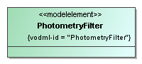
Figure VO-UML type with an explicit <<modelelement>> stereotype. This allows one to explicitly assign a vodml-id, possibly overriding the one that would be automatically assigned using the algorithm in Appendix C.
VO-DML/Schema
All main modeling elements in the VO-DML XSD (apart from Model) extend ReferableElement. This abstract base class has an identifier element <vodml-id>, the value of which must be unique in the model. This means that these elements can be referenced using this identifier. In VO-DML this is used explicitly in the ElementRef type that expresses such references inside the meta-model using a <vodml-ref> element. The type definitions for vodml-id is that of a restricted string, the details of which are expressed in the following XML Schema snippet.
<xsd:simpleType name="VODMLID">
<xsd:restriction base="xsd:string">
<xsd:pattern value="\[*a-zA-Z*\]\[*a-zA-Z0-9\_\\.\]\**"/>
</xsd:restriction>
</xsd:simpleType>
<xsd:complexType name="ReferableElement" abstract="true">
<xsd:sequence>
<xsd:element name="vodml-id" type="VODMLID" minOccurs="1"/>
<xsd:element name="name" type="xsd:string" minOccurs="1"/>
<xsd:element name="description" type="string" minOccurs="0"/>
</xsd:sequence>
</xsd:complexType>VO-DML/XML
As ReferableElement is abstract, there are no direct examples of its usage, only through types derived from it.
Identifier for the containing model element. Syntax in VO-DML/XML
defined by the VODMLID type, as shown in the VO-DML/Schema snippet
below.
This element MUST be formatted according to the regular expression in
the XML schema:
[a-zA-Z][a-zA-Z0-9_\.]*
The value assigned to an element MUST be unique in the document and is case sensitive.
The name of the model element. The name MUST conform to the following XML Schema pattern defined in the VO-DML/XSD:
[a-zA-Z][a-zA-Z0-9_]*
Names are often restricted by uniqueness constraints in subclasses of ReferableElement. For examples names of Types must be unique within their containing Package, Role names must be unique within their containing Type etc.
Human readable description of the model element. Note the multiplicity constraints. In principle every model element SHOULD have a meaningful description, but no tool will be able to check whether a certain description is correct. Since a meaningless string can easily be provided if one wants to evade a possible not null constraint, the description may be null.
To refer to a ReferableElement from inside a VO-DML/XML data model document, for example to indicate the data type of an Attribute or other Role, one must use an ElementRef. This contains a single element named vodml-ref, the value of which MUST be the exact vodml-id of the referenced element (which MUST of course exist), is case-sensitive, and MUST be prefixed by the name of the model the referenced element belongs to. This can be the same model as the one containing the referencing element, or it may be a model imported by the current model.
VO-UML
This type has not explicit counterpart in VO-UML, though XMI's xmi:idref is similarly playing the role of referring to other elements in the model. In VO-DML, ElementRef-s may refer to elements defined in an external, imported model without explicit representation in the model that uses the type.
VO-DML/Schema
<xsd:simpleType name="VODMLREF">
<xsd:restriction base="xsd:string">
<xsd:pattern
value="\[a-zA-Z\]\[a-zA-Z0-9\_\\-\]\*:\[a-zA-Z\]\[a-zA-Z0-9\_\\-\\.\]\*"/>
</xsd:restriction>
</xsd:simpleType>
<xsd:complexType name="ElementRef">
<xsd:sequence>
<xsd:element name="vodml-ref" type="VODMLREF">
</xsd:element>
</xsd:sequence>
</xsd:complexType>VO-DML/XML
Any usage of one type by another type, be it as data type of an attribute, or as target type of a relation, will give rise to an ElementRef definition in the corresponding VO-DML/XML. This generally just means the element contains a <vodml-ref> element that must conform to the syntax in the schema as in the following example.
<datatype>
<vodml-ref>ivoa:string</vodml-ref>
</datatype>
...See many more examples further on in this specification.
The element identifying the referenced target element. The syntax of the vodml-ref consists of the name of the model, a colon ':' and the vodml-id of the referenced element. In mock BNF:
<vodml-ref> :== <model-name>
':' <vodml-id>Packages divide the set of types in a model in subsets that are semantically related25, providing these with a common namespace: their names must be unique in this context only. A package may contain child packages. This concept is similar to for example an XML namespace, a Java package or a schema in a relational database.
A package uses explicit element names for each of the type classes: <objectType>, <datatype>,<primitiveType> and <enumeration>. This avoids the need for xsi:type casting in serializations and facilitates tracing path expressions.
VO-UML
UML meta-class: Package [§7.3.38]
The graphical representation of a Package in UML is a tabbed rectangle with name in the top of the rectangle as shown in Figure 5. Types owned by the package may be shown inside the rectangle. Types may also have the package name placed within parentheses below the name of the type. See the Source type in the figure for an example of the latter.

Figure A package is represented by a tabbed rectangle. Types belonging to it can be drawn inside it.
VO-DML/Schema
In VO-DML/Schema, Package is represented by a complexType of the same name and extends ReferableElement.
<xsd:complexType name="Package">
<xsd:complexContent>
<xsd:extension base="ReferableElement">
<xsd:sequence>
<xsd:element name="objectType" type="ObjectType"
minOccurs="0"
maxOccurs="1"/>
<xsd:element name="dataType" type="DataType" minOccurs="0"
maxOccurs="1"/>
<xsd:element name="enumeration" type="Enumeration"
minOccurs="0" maxOccurs="1"/>
<xsd:element name="primitiveType" type="PrimitiveType"
minOccurs="0" maxOccurs="1"/>
<xsd:element name="package" type="Package" minOccurs="0"
maxOccurs="1"/>
</xsd:complexContent>
</xsd:extension>
</xsd:complexType>VO-DML/XML
<package>
<vodml-id>source</vodml-id>
<name>source</name>
<description>\...</description>
<objectType>
<vodml-id>source.LuminosityMeasurement</vodml-id>
<name>LuminosityMeasurement</name>
...Collection of ObjectTypes defined in this package.
Collection of DataTypes defined in this package.
Collection of PrimitiveTypes defined in this package.
Collection of Enumerations defined in this package.
Collection of child packages defined in this package.
A Model represents a complete data model. It represents a coherent set of type definitions, by which it represents the concepts that have an explicit place in its universe of discourse, i.e. the set of concepts one can talk/"discourse" about in the model's context. In VO-DML each data model is defined in a single document, but Model is an explicit concept26 in VO-DML that is particularly important for supporting model reuse through the import feature (see 4.4.10).
Note that although the vodml-id of model elements MUST NOT have the prefix, references from model elements to other elements inside the same model MUST use the full vodml-ref definition 4.2.1 , i.e. MUST include the model's name as prefix.
Model has the following components, which have a 1-1 correspondence in the VO-DML/Schema. See there for more extensive comments.
VO-UML
Derived from UML element: Model [§17.3.1].
In UML a Model27 is a special kind of Package and is represented by the package symbol with a triangle in the top right as shown in Figure 6

Figure UML representation of a Model as a special kind of package.
In the Profile used for these diagrams the root of the document represents the model and a separate graphical element is not required28. The VO-UML profile contains a <<model>> stereotype that can be assigned to a Model and which defines tags which allow one to define extra metadata about the model and which correspond to the metadata elements defined in the subsections below.
VO-DML/Schema
In VO-DML/Schema Model is represented by a complexType Model. It contains definitions for model specific meta-data elements. Model is furthermore represented by the single root element defined in the schema, named model. This has type Model and has a uniqueness constraint defined on the vodml-id-s of all its contained elements.
<xsd:complexType name="Model">
<xsd:sequence>
<xsd:element name="name" type="ModelName" minOccurs="1"
maxOccurs="1"/>
<xsd:element name="description" type="xsd:string" minOccurs="0"
maxOccurs="1"/>
<xsd:element name="identifier" type="xsd:string" minOccurs="0"
maxOccurs="1"/>
<xsd:element name="uri" type="xsd:anyURI" minOccurs="1"
maxOccurs="1"/>
<xsd:element name="title" type="xsd:string" minOccurs="1"
maxOccurs="1"/>
<xsd:element name="author" type="xsd:string" minOccurs="0"
maxOccurs="unbounded"/>
<xsd:element name="version" type="xsd:string" minOccurs="1"/>
<xsd:element name="previousVersion" type="xsd:anyURI"
minOccurs="0"/>
<xsd:element name="lastModified" type="xsd:dateTime"/>
<xsd:element name="import" type="ModelImport" minOccurs="0"
maxOccurs="unbounded"/>
<xsd:element name="package" type="Package" minOccurs="0"
maxOccurs="unbounded"/>
<xsd:element name="objectType" type="ObjectType" minOccurs="0"
maxOccurs="unbounded"/>
<xsd:element name="dataType" type="DataType" minOccurs="0"
maxOccurs="unbounded"/>
<xsd:element name="enumeration" type="Enumeration" minOccurs="0"
maxOccurs="unbounded"/>
<xsd:element name="primitiveType" type="PrimitiveType"
minOccurs="0" maxOccurs="unbounded"/>
</xsd:sequence>
</xsd:complexType>VO-DML/XML
<vo-dml:model xmlns:vo-dml="http://www.ivoa.net/xml/VODML/v1">
<name>src/name>
<description>This is a sample data model. \...
</description>
<uri>http://ivoa.net/vodml/source1.vo-dml</uri>
<title>Sample VO-DML data model.</title>
<version>0.x</version>
<lastModified>2013-05-04T19:24:52</lastModified>
<import>
<name>photdm-alt</name>
<version>1.0</version>
<url>https://volute.g-vo.org/svn/trunk/projects/dm/vo-dml/models/sample/filter/Filter.vo-dml.xml</url>
<documentationURL>https://volute.g-vo.org/svn/trunk/projects/dm/vo-dml/models/sample/filter/Filter.html
</documentationURL>
</import>
...The short name and identifier for this model. A standard model's name is assumed to be globally unique in the IVOA29. Model definitions that are not part of the IVOA standards but are intended to extend a standard model SHOULD use the underscore character and a unique prefix for their models, e.g. “gaia_src” in order to avoid name clashes with other extensions from other authors. The name/identifier is also used as the prefix in the construction of strings referencing the model with that name, e.g. “src:Source”.
For its role as prefix in VODMLREFs we restrict the valid values of the model name to the following XML Schema pattern (defined in the ModelName type in the VO-DML/XSD):
[a-zA-Z][a-zA-Z0-9_\-]*
long description for the Model
A string holding the identifier by which the current model is registered in an IVOA compatible registry. Its structure must therefore conform to the IVOA Identifier specification [28]. If the model is an IVOA standard, the naming authority for the identifier should be the IVOA DM working group. See section 6 for more details on how data models are to be registered.
Each model has an associated model URI that MUST be used to reference it, for example in ModelImports or in VOTable annotations. Dereferencing the model URI and following redirects yields the latest VO-DML for the data model. In accordance to the proposal in [29], the model URI must not contain minor versions. IVOA-approved data models will have URIs of the form
http://ivoa.net/vodml/<name>.vo-dml,
where 'name' will already contain the major version (as in, for instance, stc2). The minor version of the model will be contained in the version attribute defined below.
Non-IVOA providers of VO-DML files should follow the IVOA practice of returning a 302 Found redirect when dereferencing model URIs. The URI redirected to should be stable for the exact version, including minor and possibly micro releases, so that clients can easily determine what actual file they are running against. This is primarily relevant for debugging.
Long name for the Model.
List of names of authors who have contributed to this model.
Label indicating the version of this model.
URI identifying a VO-DML model that is the version from which the current version of model is derived.
Timestamp when the last change to the current model was made.
An 'import' element indicates a dependency on an external, predefined VO-DML data model. Types from that model may be referenced, extended, or assigned to attributes as data types. Types from the external model MUST NOT be used for composition relationships.
Collection of child packages defined in this model.
Collection of ObjectTypes defined directly under the model.
Collection of DataTypes defined directly under the model.
Collection of Enumerations defined directly under the model.
Collection of PrimitiveTypes defined directly under the model.
A Model can import (see 4.4.10) another Model. This implies that elements of the imported Model are used in the definition of elements in the current Model. For example when Types from another model are assigned to Roles, or when a Type inherits from a Type in another model, then that model MUST be imported. In a VO-DML model document the imported Model is represented by a ModelImport element that contains metadata components identifying the remote model and its documentation, as well as its name that must be used as prefix when referring to elements in the imported model.
Note that only models that are directly used, or whose types are extended must be imported. But model import is not transitive. For example, if model A uses model B, and model B uses model C (but model A does not), only model B must be imported in model A. But if model A does use elements from model C explicitly, than A MUST import model C as well30.
VO-UML
Relevant UML meta-classes: Model. [§17.3.1], PackageImport [§7.3.40], ElementImport [§7.3.15]
A ModelImport is represented by a child Model element with IVOA-Profile stereotype <<modelimport>>. Graphically it is represented by a Model element (see Figure 6) that may contain type proxies. The latter are a pure VO-UML feature and not part of the VO-DML language. They are types that MUST use IVOA-Profile stereotype <<modelelement>> and provide a value for the 'vodml-id' tag.

Figure Graphical representation of an imported model. Note the usage of the stereotype <<modelimport>> and the values assigned to the various tags. Also shown is a type imported with the model. It must have an explicit vodml-id assigned, which is accomplished using the <modelelement>> stereotype (see 4.1 ).
VO-DML/Schema
<xsd:complexType name="ModelImport">
<xsd:sequence>
<xsd:element name="name" type="xsd:string" minOccurs="1"/>
<xsd:element name="identifier" type="xsd:string"
minOccurs="1"/>
<xsd:element name="version" type="xsd:string"
minOccurs="1"/>
<xsd:element name="url" type="xsd:anyURI"
*/*>
<xsd:element name="documentationURL" type="xsd:anyURI"/>
</xsd:sequence>
</xsd:complexType>VO-DML/XML
See 4.4.10.
Name by which imported model is used in the current model and its documentation. This name MUST be the same as the 'name' given to the imported model in the VO-DML document from which it is imported. Each vodml-ref (4.2.1 ) pointing to an element in the imported model MUST use this name as prefix.
The IVOA identifier by which the imported modeled is registered in an IVOA registry.
Version of the imported model.
URL from which the imported VO-DML model document can be downloaded.
URL where a documentation HTML file for the remote model can be downloaded. This SHOULD be a document that contains anchors for each element that has as name attribute the vodml-id of that element. I.e. it is assumed that the vodml-id-s of the imported types can be added onto this documentationURL as fragments so that a direct link to the documentation for a referenced data model element can be found.
The ultimate goal of any VO-DML data model is to describe a part of the world. The world is assumed to consist of objects of some type or another. Instead of objects one could use the terms individuals (see OWL for example), or entities (entity-relationship models).
The most important way the modeling language has for describing this world of objects is by defining subsets of all these objects. In VO-DML these subsets are referred to as Types. The Type defines a set of properties that all objects in the set, also called instances of the Type, possess. VO-DML assumes that every instance in the Universe of Discourse, i.e. every object "worth talking about" in the context of the model, must be explicitly assigned to one Type.
Type is abstract and is extended by ultimately four concrete subtypes.
The most important31 categorization of Types is that between so called object types and value types.
An object type represents a full-fledged, possibly very complex concept in the real world and is built from properties and relations to other object types. An important feature of object types as opposed to ValueType-s (see below) is that instances of ObjectTypes, i.e. objects, have their own, explicit identity32 that is defined independent of the state of the object.
A value type represents a simple concept that is generally used as a building block for defining more complex concepts up to object types. In contrast to the latter, instances of ValueType-s, i.e. values need not be explicitly identified. They are identified by their value alone. For example an integer is a value type; all instances of the integer value '3' represent the same integer. Not all value types are atomic though, see DataType below.
Another way to express the difference between value types and object types lies at the heart of why and how databases are built. The extent of a value type, i.e. its set of valid instances/values, is self-evident from its definition. That is, from the definition one can infer exactly which values exist in the set defined by the value type. Hence one can identify the instance by its value.
This is not the case for object types. Though one can define a Person object type with say a name and a date-of-birth for example, one cannot be sure that any combination of a name and a date will correspond to an existing person. Moreover, two existing instances named 'Jane' born on Jan 12 1965 are not by definition the same (instance of) Person. For object types it is therefore first a meaningful, non-trivial statement to make that some instance exists, and second to assign an identity to these instances that is independent of the state of the instance.
And this is precisely what a database does. One will never create a database and store in it all integers, or all points on the unit sphere, simply to make the statement that each of these exists. Their existence is pre-defined by the definition of the sphere.
In contrast, one does create databases with information about persons, possibly containing an integer attribute age. Or ones that store sources observed on the sky, with their position represented by a point on the sphere and an explicit identifier. Hence sources and persons are represented by object types integers and "points-on-the-unit-sphere" by a value type (a PrimitiveType for the former, a DataType for the latter to be precise).
VO-UML
Relevant UML meta-classes: Type [§7.3.52], Classifier [§7.3.8], Generalization [§7.3.20].
Type and Classifier are abstract meta-classes in UML and have no graphical representation of their own. Classifier extends Type and is itself the super-type of UML meta-classes Class and DataType which are represented in VO-DML by ObjectType and the value types PrimitiveType, Enumeration and DataType respectively. All these types are represented graphically by rectangles with at least the name of the type and possibly the stereotype defining the particular "type of the type", as shown in Figure 8.
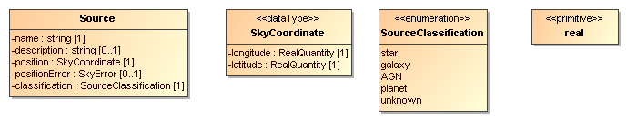
Figure Examples of the four different classes of types supported by VO-DML and their representation. See the definition of the types for more details.
The inheritance relationship is represented in UML by the Generalization meta-class and graphically by an arrow (always red in our profile) with a hollow arrow head from sub-type to super-type. In UML Generalization is a special relation between types, in VO-DML it is simply a pointer (ElementRef) from sub-type to super-type, owned by the sub-type.
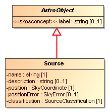
VO-DML/Schema
In VO-DML/Schema Type is represented by an abstract complexType named Type. It is the base-type of all more concrete type definitions. It extends ReferableElement, hence all type definitions can be referenced and MUST have a <vodml-id> element. Types may be abstract, in which case no instances can be produced (similar to for example abstract classes in Java). They may also extend another type, which will be referred to as the super-type. The super-type is identified by an ElementRef.
<xsd:complexType name="Type" abstract="true">
<xsd:complexContent>
<xsd:extension base="ReferableElement">
<xsd:sequence>
<xsd:element name="extends" type="ElementRef"
minOccurs="0"/>
<xsd:element name="constraints" type="Constraint"
minOccurs="0" maxOccurs="unbounded"/>
</xsd:sequence>
<xsd:attribute name="abstract" type="xsd:boolean" default="false" use="optional"/>
</xsd:extension>
</xsd:complexContent>
</xsd:complexType>VO-DML/XML
For examples of type definitions see the definitions of the concrete sub-types of Type. The following snippet is an example of the extends relationship.
<objectType>
<vodml-id>source.Source</vodml-id>
<name>Source</name>
...
<extends>
<vodml-ref>src:source.AstroObject</vodml-ref>
</extends>
...VO-DML supports the object-oriented concept of inheritance, or generalization, between Types. Generalization is a directed binary association between a specialized sub-type and its more general super-type (the target) identified through the extends property, which is a reference to the target element.
It defines a sub-set relation between the set of instances defined by the super-type and that of the sub-type: every instance of a sub-type is also an instance of the super-type. In contrast to UML, VO-DML does not support multiple inheritance, i.e. a type can have at most one direct super-type. Furthermore ObjectTypes can only extend ObjectTypes, DataTypes can only extend DataTypes etc.
Instances of sub-types inherit all the Roles and Constraints (see below) defined on the super-type. This inheritance is applied recursively, i.e. a type also inherits the roles and constraints its super-type has inherited.
Instances of a Type can be constrained by rules that define whether they are valid instances. VO-DML allows two types of constraints: Generic expressions in some computer-readable language, defined by the Constraint type itself, or SubsettedRole-s, which offers a way to constrain elements of inherited Roles and extends Constraint.
A ValueType is a special kind of Type, one whose instances are values. See the discussion in the definition of Type for the details on why ValueType is defined.
VO-UML
Nearest UML meta-class: DataType. [§7.3.11]
VO-DML has a special concept to represent all value types, whereas UML uses DataType for this. VO-DML defines DataType (see 4.11 ) as a special kind of ValueType.
VO-DML/Schema
<xsd:complexType name="ValueType" abstract="true">
<xsd:complexContent>
<xsd:extension base="Type">
</xsd:extension>
</xsd:complexContent>
</xsd:complexType>A PrimitiveType represents an atomic piece of data, a value with no structure. Examples are the standard types like integer, boolean, real, and string (which is treated as an atomic value, not an array of characters) and so on.
A primitive type can be an extension of another primitive type, but must then always be considered a restriction on the possible values of that type. The particular restriction SHOULD be identified using an explicit Constraint (see 4.20 ) defined on the type.
VO-UML
Derived from UML meta-class: Primitive Type [§7.3.44].
A primitive type is represented graphically by an UML DataType, which is a rectangle containing the name of the type and stereotype <<primitive>> placed above the name. If it extends an existing type, the Constraint defining the restriction may be represented by text below the type name as in the example in the figure.
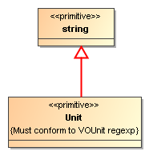
VO-DML/Schema
<xsd:complexType name="PrimitiveType">
<xsd:complexContent>
<xsd:extension base="ValueType">
</xsd:extension>
</xsd:complexContent>
</xsd:complexType>VO-DML/XML
<primitiveType>
<vodml-id>quantity/Unit</vodml-id>
<name>Unit\</name>
<description>
Must conform to definition of unit in VOUnit spec.
</description>
<extends>
<vodml-ref>ivoa:string</vodml-ref>
</extends>
</primitiveType>An Enumeration is a PrimitiveType with a finite list of possible values, the Literals. This list restricts the domain of possible instances of the type. Common usage is to identify different categories of a structured ObjectType or DataType that uses the Enumeration as an Attribute. The literals are meant to identify these distinct categories.
Care should be taken in defining Enumerations and Attributes using them. In particular a choice must be made between introducing such a new type in the model and assigning a semantic vocabulary to the attribute (see 4.14.1 ). In particular if the set of concepts or categories might change over time it is better to use the latter approach.
An important consideration is whether the definition of the type defines automatically all its instances, the characteristic of a ValueType..
VO-UML
Essentially equivalent to UML meta-class Enumeration [§7.3.16]
An enumeration is represented graphically by the element for a UML DataType with the stereotype <<enumeration>> above the name of the type. Below the name the literals are listed.

Figure Example enumeration listing a number of literals representing source classifications.
VO-DML/XSD
<xsd:complexType name="Enumeration">
<xsd:complexContent>
<xsd:extension base="PrimitiveType">
<xsd:sequence>
<xsd:element name="literal" type="EnumLiteral"
maxOccurs="unbounded">
</xsd:element>
</xsd:sequence>
</xsd:extension>
</xsd:complexContent>
</xsd:complexType>VO-DML/XML
<enumeration>
<vodml-id>source.SourceClassification</vodml-id>
<name>SourceClassification</name>
<literal>
<vodml-id>source.SourceClassification.star</vodml-id>
<name>star</name>
<description>...</description>
</literal>
<literal>
<vodml-id>source.SourceClassification.galaxy</vodml-id>
<name>galaxy</name>
<description>...</description>
</literal>
</enumeration>An Enumeration is defined by a collection of literal-s, basically just names with a vodml-id and a description. The literals are modeled as strings, as the actual value of an enumeration literal is not important, only its meaning and the fact that the values must be distinct. Similar to the interpretation of the inheritance relationship of PrimitiveTypes, a sub-type of an Enumeration must restrict the set of accessible values and should explicitly define the literals it allows among the literals defined by the super-type.
EnumLiteral does not add any new features to ReferableElement. Note that the literal's value is defined by the name attribute inherited from ReferableElement. A literal is-a ReferableElement because we may want to refer to it. The main use case for this is where an existing data(base) model for example has its own list of values which are not identical to the values used in the Enumeration. An explicit mapping to the enumeration literals allows one to make the required translation.
Because of its likely use in defining the vodml-id, the literal has the same restrictions defined by the VODMLNAME pattern.
VO-UML
EnumLiteral is equivalent to UML meta-class EnumerationLiteral [§7.3.17]
VO-DML/XSD
<xsd:complexType name="EnumLiteral">
<xsd:complexContent>
<xsd:extension base="ReferableElement">
<xsd:sequence>
</xsd:sequence>
</xsd:extension>
</xsd:complexContent>
</xsd:complexType>A DataType is a value type with structure. The structure is generally defined by attributes on the DataType, and possibly references. The state of instance of a DataType, i.e. a value, consists of the assignment of values to all the attributes and references. This is similar to ObjectTypes defined below, but in contrast to ObjectTypes, DataTypes have no explicit identity. As is the case for the other ValueTypes, DataTypes are defined by their state only. I.e. two DataType instances with the same state are the same instance. Instead, ObjectTypes with the same state but different identity are not the same
For example the DataType Position3D, with attributes x, y, and z, is completely defined by the values of the three attributes. Logically, there are no 2 distinct instances of this DataType with exact same values (x=1.2, y=2.3, z=3.4). Note, however, that this statement does not have implications on the implementations: one might indeed have two instances of a DataType at two distinct memory locations with the same state. However, an equality test on those concrete instances should always return ‘true’ as long as they have the same state.
Also, this specification does not provide any requirements regarding the immutability of DataType instances, i.e. whether or not it is possible to change one value of a DataType instance without requiring a new concrete instance to be created from scratch. As far as the VO-DML meta-model is concerned, two DataType instances with different states are always, logically, distinct instances. However, we do not specify how such behavior has to be interpreted in implementations. As DataTypes can, in principle, be arbitrarily complex in structure, an implementation might make their instances mutable for the sake of simplicity.
DataType can have outgoing references with target an ObjectType. This makes certain patterns more reusable. The reference is assumed to provide reference data with respect to which the rest of the value should be interpreted. For example SkyCoordinate may have a reference to a SkyCoordinateFrame to help interpret the values of the longitude/latitude attributes.
VO-UML
Derived from UML meta-class: Data Type [§7.3.11]
This concept is represented graphically by a box with stereotype <<dataType>> and possibly attributes and reference relations.
Note that VO-UML enforces a specific notation for attributes that are DataTypes or ObjectTypes, whereas UML allows some freedom of notation. In particular, attributes that are DataTypes should always be included in the box representing the owning type, while attributes that are ObjectTypes should always be represented as distinct boxes made targets of an association.
As VO-UML is not normative, alternative graphical representations are fine as long as they conform to UML rules and that they are explicitly noted.

Figure DataType SkyCoordinate is defined as a longitude/latitude pair with a reference to a reference frame that allows the interpretation of the values of the attributes.
VO-UML/Schema
<xsd:complexType name="DataType">
<xsd:complexContent>
<xsd:extension base="ValueType">
<xsd:sequence>
<xsd:element name="attribute" type="Attribute"
minOccurs="0" maxOccurs="1"/>
<xsd:element name="reference" type="Reference"
minOccurs="0" maxOccurs="1"/>
</xsd:sequence>
</xsd:extension>
</xsd:complexContent>
</xsd:complexType>VO-UML/XML
<dataType>
<vodml-id>source.SkyCoordinate</vodml-id>
<name>SkyCoordinate</name>
<description>\...</description>
<attribute>
<vodml-id>source.SkyCoordinate.longitude</vodml-id>
<name>longitude</name>
<description>\...</description>
<datatype>
<vodml-ref>ivoa:quantity.RealQuantity</vodml-ref>
</datatype>
<multiplicity>1</multiplicity>
</attribute>
<attribute>
<vodml-id>source.SkyCoordinate.latitude</vodml-id>
<name>latitude</name>
<description>\...</description>
<datatype>
<vodml-ref>ivoa:quantity.RealQuantity</vodml-ref>
</datatype>
<multiplicity>1</multiplicity>
</attribute>
<reference>
<vodml-id>source.SkyCoordinate.frame</vodml-id>
<name>frame</name>
<description>\...</description>
<datatype>
<vodml-ref>src:source.SkyCoordinateFrame</vodml-ref>
</datatype>
<multiplicity>1</multiplicity>
</reference>
</dataType>Attributes are structural features of DataTypes and also ObjectTypes. They represent the role a ValueType plays in the definition of the parent type. They are like columns in a table, simple elements in XML etc., though of course the Attribute might itself be a structured DataType.
References represent the role an ObjectType plays in the value of a structured type. A reference on a DataType is assumed to provide reference data to help interpreting the values of the attributes of the type. For example a DataType representing a "position on the sky" needs a reference to a reference frame to ensure that its attributes longitude and latitude are interpreted properly.
As described in the section of Type next to value types, the other major group of types are object types. To make this explicit their representation in VO-DML is named ObjectType. They are the fundamental building blocks of almost every data model, are in fact the reason most data models get built especially if they aim to serve as the model (schema) of some database. A database is basically a collection of those objects for which it is meaningful to store special information. Though generally ignored, the first important statement made of these database objects is actually simply that they exist, second that they have certain properties. ObjectType is meant for representing such kind of data model elements. Those for which their existence is not self-evident from the definition of the Type they belong to.
VO-UML
Derived from UML meta-class Class [§7.3.7].
VO-DML does not follow UML's use of the name Class, as the phrase is too commonly used in many of the possible serialization contexts. E.g. most if not all object oriented languages use "class" for all structured types. SmallTalk even uses it for all types.
VO-UML represents ObjectType graphically by a rectangle with a name and possibly a custom stereotype such as <<modelelement>>. An ObjectType may have attributes and be the source or target of relationships.
Note that VO-UML enforces a specific notation for attributes that are DataTypes or ObjectTypes, whereas UML allows some freedom of notation. In particular, attributes that are DataTypes should always be included in the box representing the owning type, while attributes that are ObjectTypes should always be represented as distinct boxes made targets of a named association.
As VO-UML is not normative, alternative graphical representations are fine as long as they conform to UML rules and they are explicitly mapped to the VO-UML notation.

VO-DML/Schema
In XSD the ObjectType is represented by a complexType definition ObjectType that extends Type.
<xsd:complexType name="ObjectType">
<xsd:complexContent>
<xsd:extension base="Type">
<xsd:sequence>
<xsd:element name="attribute" type="Attribute"
minOccurs="0" maxOccurs="1"/>
<xsd:element name="composition" type="Composition"
minOccurs="0" maxOccurs="1"/>
<xsd:element name="reference" type="Reference"
minOccurs="0" maxOccurs="1"/>
</xsd:sequence>
</xsd:extension>
</xsd:complexContent>
</xsd:complexType>VO-DML/XML
<objectType>
<vodml-id>source.Source</vodml-id>
<name>Source</name>
<description>\...</description>
<extends>
<vodml-ref>src:source.AstroObject</vodml-ref>
</extends>
...
</objectType>Collection of Attribute definitions.
Collection of Composition relations owned by the object type. This relation between ObjectTypes indicates that an instance of the owner of the composition, the parent, is composed of other objects, sometimes referred to as children. This is a very strong “has-a” relationship. It indicates for example that (in the model) an instance of the child object type cannot exist without an instance of the parent33. Also, a child object cannot be swapped between parents during the life cycle of those. And finally a certain ObjectType can only be contained in one parent ObjectType. And the counting includes potential containment relations inherited through a super-type. I.e. if ObjectType A has a composition of B-s, any sub-type of B is bound by this relation. And no sub-type of B can be the child in a containment relationship.
These constraints enforce models that are consistent and that can be easily represented in many different contexts, ranging from database management systems to object oriented applications. It is easy to find solutions that work around these constraints if one really needs to, but in general such constraints are useful to help modelers avoiding modeling solutions that would prove to be problematic from the interoperability point of view.
Note that implementations of the Composition relationship usually provide means to navigate from the contained instance to its container. However, this is left out of this specification and freedom is left to the implementations to provide such mechanisms. This is also true for serialization strategies, which should always allow clients to navigate from the contained instances to their containers.
Collection of Reference definitions. The reference relation is the second type of relation between ObjectTypes. It is a much looser relation than composition. The interpretation is here more general than the one for the reference collection on DataType. Relations here can have meaning beyond providing reference data for interpreting the attributes.
It is important to note that in a Reference relation the life cycles of both ends of the relation itself are completely independent. This also means that there is, in general, no way for clients to navigate from the referenced instance to the instances that reference them, unless the specific implementations provide such mechanisms according to their requirements.
A Role represents the usage of one type (call it "target") in the definition of another (call it "source"). The "target" type is said to play a role in the definition of the "source" type. Examples are where the target is the super-type of the source, or where the target is the data type of an attribute defined on the source.
There are different kinds of roles, in VO-DML defined as sub-types of Role. Role defines only a "data type" attribute that has an ElementRef as data type, but is constrained by Schematron rules to reference a Type. Specializations of Role will introduce further constraints.
VO-UML
Role is similar to the UML concepts Feature [§7.3.19], StructuralFeature [§7.3.50], TypedElement [§7.3.53] and Property [§7.3.45]. The sub-types of Role make this correspondence more concrete.
VO-DML/Schema
Role is explicitly represented in the VO-DML/Schema. It contains child elements datatype that identifies (through a <vodml-ref>) the type that is playing the role on the parent type containing the role, and multiplicity that defines the cardinality of the attribute, i.e. how many instances of the data type can be added to the parent type. Role is abstract, hence only subclasses can be instantiated. The subclasses define more restrictions on the datatype and multiplicity attributes.
<xsd:complexType name="Role" abstract="true">
<xsd:complexContent>
<xsd:extension base="ReferableElement">
<xsd:sequence>
<xsd:element name="datatype" type="ElementRef"
minOccurs="1"/>
<xsd:element name="multiplicity" type="Multiplicity"
minOccurs="0"/>
</xsd:sequence>
</xsd:extension>
</xsd:complexContent>
</xsd:complexType>The datatype property of a Role identifies the target type of the role, the one that actually "plays the role". In VO-DML/Schema it is represented by an ElementRef that MUST identify a Type.
Indicates the multiplicity or cardinality of the role. This indicates how many instances of the target datatype can be assigned to the role property.
An Attribute is the role that a ValueType can play in the definition of a structured type, i.e. an ObjectType or DataType. It represents a typical property of the parent type such as age, mass, length, position etc.
Attribute restricts the possible types of the Role's datatype attribute to ValueType-s only. Please refer to the definition of the Multiplicity type for some special restrictions and interpretations on Attribute multiplicities.
VO-UML
Figure . The rows in the lower part of the box represent attributes. Their name, datatype and multiplicity are indicated.
VO-DML/Schema
<xsd:complexType name="Attribute">
<xsd:complexContent>
<xsd:extension base="Role">
<xsd:sequence>
<xsd:element name="semanticconcept" type="SemanticConcept"
minOccurs="1"/>
</xsd:sequence>
</xsd:extension>
</xsd:complexContent>
</xsd:complexType>VO-DML/XML
<objectType>
<vodml-id>source.Source</vodml-id>
<name>Source</name>
...
<attribute>
<vodml-id>source.Source.name</vodml-id>
<name>name</name>
<description>\...</description>
<datatype>
<vodml-ref>ivoa:string</vodml-ref>
</datatype>
<multiplicity>
<minOccurs>1</minOccurs>
<maxOccurs>1</maxOccurs>
</multiplicity>
</attribute>
...If an Attribute definition contains a semanticconcept it implies the value of the attribute should be able to identify a concept in some semantic vocabulary. This may be a SKOS vocabulary as in [17], but it may be more general, see the definition of the SemanticConcept definition. In this case the data type attribute should be compatible with a string.
It is a common pattern in data modeling that one wishes to constrain the set of values on an attribute to some predefined list. One way to do so is using an Enumeration as the attribute's datatype. A user of a data model knows immediately that the elements of the enumeration are exhaustive and exclusive, and also that they are reasonably slow to change. These features can sometimes, however, be disadvantages, for example when a list of terms might be very large and should be allowed to evolve over time, or is predefined and possibly maintained by another party. In such cases, the values should be constrained by some external semantic structure, references to which are supported by the SemanticConcept type.
This mechanism should not be taken as an invitation to subvert the main VO-DML model by introducing arbitrary external modelling frameworks. The two mechanisms described below, using SKOS vocabularies and RDFS sub-classing, are intended to be illustrative rather than exhaustive, and if these are felt to be insufficient for some reason, the alternative should be compatible in spirit with these.
SKOS vocabularies: The IVOA Recommendation Vocabularies in the Virtual Observatory specifies that the format for such vocabularies should be "based on the W3C's Resource Description Framework (RDF) and the Simple Knowledge Organization System (SKOS)" [17]. When using a SKOS vocabulary as the external semantic structure, the topconcept attribute names a SKOS Concept (that is, an instance of skos:Concept): all of the actual values of the associated attribute must be narrower than this Concept. To be precise, for a top concept T, any concept c is a valid value for this property, if either:
c skos:broaderTransitive T .
or if there exists a concept X such that
c skos:broaderTransitive X. X skos:broadMatch T.
(this just means that, if c is in the same vocabulary as T, then it's connected by a chain of any number of skos:broader, and if it's in a different vocabulary, then there is some X which is in the same vocabulary as c, with a cross-vocabulary link between X and T).
The SKOS thesaurus-based approach is most useful in the context of
searching and browsing of resources. It is not intended to be useful
for any sort of inferencing, and in particular does not support a
subclassing or 'Is-A' relationship. Although it might be tempting to
say, for example, something like 'calibration-image' skos:narrower
'dark-image', one is not formally permitted to conclude from this that a
dark is a type of calibration image (even though that is true).
RDFS ontologies: The RDF Schema standard <http://www.w3.org/TR/rdf-schema/> provides the
minimal structures which are necessary for simple ontologies, and the
inferencing associated with them. It includes domain and range
constraints, and subtyping of classes and properties, but cannot, for
example, express exclusivity of two terms. If the external semantic
structure is of this type, then the topconcept attribute names an
rdfs:Class (not an rdfs:Property), and the actual instances of the
associated attribute must be (transitively) rdfs:subClassOf this
class.
It is not necessary to indicate in the VO-DML model which of these options has been chosen, since the URI which is the value of the attribute will contain its own typing information.
VO-UML
SemanticConcept has no explicit representation in UML.
In VO-UML one may represent it using a stereotype <<semanticconcept>> that can be assigned to attributes. The stereotype can be given tag definitions for the vocabularyURI and the topConcept attributes as in the MagicDraw example in Figure 12.
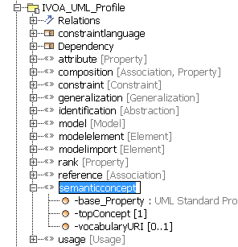
Figure Definition of a <<semanticconcept>> stereotype with tag definitions for topConcept and vocabularyURI.
This can now be assigned to an attribute as in the example in Figure 13
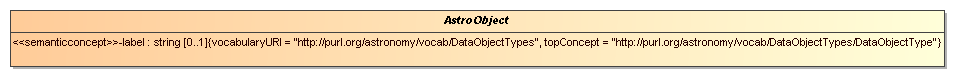
Figure Assignment of <<semanticconcept>> stereotype to the attribute label in the object type AstroObject. Here the vocabularyURI identifies a vocabulary of astronomical object types.
VO-DML/Schema
<xsd:complexType name="SemanticConcept">
<xsd:sequence>
<xsd:element name="topConcept" type="xsd:anyURI"
minOccurs="0">
</xsd:element>
<xsd:element name="vocabularyURI" type="xsd:anyURI"
minOccurs="0"
maxOccurs="unbounded">
</xsd:element>
</xsd:sequence>
</xsd:complexType>VO-DML/XML
<objectType abstract="true">
<vodml-id>source.AstroObject</vodml-id>
<name>AstroObject</name>
<attribute>
<vodml-id>source.AstroObject.label</vodml-id>
<name>label</name>
<description>
...
</description>
<datatype>
<vodml-ref>ivoa:string</vodml-ref>
</datatype>
<multiplicity>
<minOccurs>0</minOccurs>
<maxOccurs>1</maxOccurs>
</multiplicity>
<semanticconcept>
<topConcept>
http://purl.org/astronomy/vocab/DataObjectTypes/DataObjectType
</topConcept>
<vocabularyURI>
http://purl.org/astronomy/vocab/DataObjectTypes
</vocabularyURI>
</semanticconcept>
</attribute>
</objectType>If this attribute is given a value, it indicates that the attribute to which the SemanticConcept has been assigned MUST take values from the vocabulary identified by the URI. It may be possible to define a subset of its values using the topConcept attribute.
If this attribute is set, the specified URI identifies a semantic concept and the value of the Attribute to which the SemanticConcept has been assigned must themselves be semantic concepts that are narrower than this broadest concept in the sense described above. If also the vocabularyURI is set, the values of the Attribute must come from the vocabulary identified by that URI as well.
A Relation is a Role played by a (target) ObjectType in the definition of a (source) ObjectType or DataType. It indicates that the target of the relation is related in some fashion to the source type. It also implies a relation between instances of the target and the source. For this reason the Generalization construct is not a Relation.
VO-DML defines two concrete refinements of Relation, Composition and Reference that embody the different semantics of composite and shared relationships. The precise details of a particular Relation defined in a model must be described using its description attribute.
VO-UML
Relation is a combination of UML's Association and Association End elements:
Whereas in UML associations are first class elements that are directly owned by a package or model, in VO-DML it is always the source ObjectType that defines and owns the Relation. This is equivalent to constraining each UML association to always have a navigable association end.
In VO-UML Relations are indicated by arrows from the source to the target in the relation with a name and multiplicity written near the target. Details depend on the type of relation.
VO-XML/Schema
<xsd:complexType name="Relation" abstract="true">
<xsd:annotation>
<xsd:documentation>
A relation is a Role where the target datatype is an ObjectType.
</xsd:documentation>
</xsd:annotation>
<xsd:complexContent>
<xsd:extension base="Role">
<xsd:sequence>
</xsd:sequence>
</xsd:extension>
</xsd:complexContent>
</xsd:complexType>Composition is a special type of Relation that represents the fact that often an object can be seen to be "composed of" other objects. This is often called a whole-parts relationship. We will also refer to it as a parent-child relation34. Examples are the relationship between an image and the pixels it is composed of, or a bit more abstractly, a source catalogue and its sources.
This is quite a strong relationship, stronger than the Reference relation discussed later. For example the life cycles of the child objects are governed by that of the parent. When an image is destroyed, so are its pixels; when a source catalogue is discarded so are its sources. Similarly an object can only be a part of a single parent, i.e. the relation is not shared.
At the modeling level it is almost invariably true that the part/child types are defined as a result of an analysis of the parent type. I.e. their definitions are generally tightly bound. VO-DML formalizes this by adding the constraint that an ObjectType can only be the target of at most one Composition relation. The counting should include relationships inherited from a super-type, i.e. if a super-type is already contained in a parent, then none of its sub-types may be declared to be contained. This constraint facilitates the analysis of models as well as for example the mapping to the relational model35.
VO-UML
In VO-UML a composition relation is represented by a composition association, an arrow with a filled, closed diamond indicating a composition side of the container and an arrow on the end of the contained class. In the UML Profile used for the diagrams a blue color is used for this relation

Figure Composition Relation between two object types.
VO-DML/Schema
<xsd:complexType name="Composition">
<xsd:complexContent>
<xsd:extension base="Relation">
<xsd:sequence>
<xsd:element name="isOrdered" type="xsd:boolean"
default="false" minOccurs="0">
</xsd:element>
</xsd:sequence>
</xsd:extension>
</xsd:complexContent>
</xsd:complexType>VO-DML/XML
<objectType>
<vodml-id>source.Source</vodml-id>
<name>Source</name>
...
<composition>
<vodml-id>source.Source.luminosity</vodml-id>
<name>[luminosity]{.underline}</name>
<description>
Collection of luminosity measurements for the parent source.
</description>
<datatype>
<vodml-ref>src:source.LuminosityMeasurement</vodml-ref>
</datatype>
<multiplicity>
<minOccurs>0</minOccurs>
<maxOccurs>-1</maxOccurs>
</multiplicity>
</composition>
</objectType>A reference is a relation that indicates a kind of usage, or dependency of one object (the source, or referrer) on another (the target). Such a relation may in general be shared, i.e. many referrer objects may reference a single target object.
In general a reference relates two ObjectTypes, but DataType-s can have a reference as well. An example of this is a coordinate on the sky consisting of a longitude and latitude, which requires a reference to a CoordinateFrame for its interpretation. I.e. the frame is used as "reference data".
VO-UML
A reference is indicated by a green arrow from referrer (an ObjectType or DataType) to the target (an ObjectType). In UML an association is used, though the reference is actually most similar to a binary association end.

Figure Reference (green arrow) from an ObjectTYpe to an ObjectType.
Figure Reference from a DataType to an ObjectType
VO-DML/Schema
<xsd:complexType name="Reference">
<xsd:complexContent>
<xsd:extension base="1">
</xsd:extension>
</xsd:complexContent>
</xsd:complexType>VO-DML/XML
<dataType>
<vodml-id>source.SkyCoordinate</vodml-id>
<name>SkyCoordinate</name>
...
<reference>
<vodml-id>source.SkyCoordinate.frame</vodml-id>
<name>frame</name>
<description>
...
</description>
<datatype>
<vodml-ref>src:source.SkyCoordinateFrame</vodml-ref>
</datatype>
<multiplicity>1</multiplicity>
</reference>
...Multiplicity is used to indicate the cardinality of a Role defined on an ObjectType or DataType. It indicates how many values may be assigned to the role in an instance of the type. VO-DML models this using the same terms as used in XML schema, namely with a minOccurs/maxOccurs pair of values. The former indicates the minimum number of instances or values that can be assigned to a given role, the latter the maximum number. Also XMI supports two values (named differently) and VO-DML follows its specification in using -1 as a possible value for maxOccurs that indicates that there is no limit on the possible number of instances. In XML schema this is indicated using the string value 'unbounded', in UML diagrams generally with a '∗'.
A special case is the assignment of a Multiplicity to an Attribute. Users are strongly encouraged to only use the following combinations of minOccurs..maxOccurs: 0..1,1..1 (or simply 1), and 0..n, or n..n with n an explicit integer value >1. For multiplicity greater than 1 the attribute must be interpreted as an array of fixed size. To indicate that the value of such an array attribute is optional, the multiplicity 0..n must be used (i.e. minOccurs=0, maxOccurs=n). For maxOccurs n > 1, minOccurs can only be 0 or n, other values are meaningless and illegal.
Modelers SHOULD NOT use open ended multiplicities, i.e. with maxOccurs=-1, but it is not illegal in the current version of this specification. References SHOULD NOT be given multiplicities with maxOccurs > 1, but this is allowed.36 This is one way in which one might represent a UML aggregation relationship, but preferably aggregation should be implemented using the pattern described in A.1 and illustrated in Figure 23.
VO-UML
In VO-UML the multiplicity, when assigned to an attribute, shows up in square brackets after the attribute's type. If minOccurs and maxOccurs have the same value, that single value is shown. If they have different values they show up separated by two dots, '..'. The value of -1 for maxOccurs is represented by a '∗':
Figure Multiplicites assigned to attributes.
When the multiplicity is assigned to a relation, a similar pattern is shown near the name of the relation, close to the target datatype of the relation:
Figure Multiplicity assigned to (composition) relation.
Note that the 0..* here indicates minOccurs = 0, maxOccurs = -1.
VO-DML/Schema
<xsd:complexType name="Multiplicity">
<xsd:sequence>
<xsd:element name="minOccurs" type="xsd:nonNegativeInteger"
default="1"/>
<xsd:element name="maxOccurs" type="xsd:int" default="1"/>
</xsd:sequence>
</xsd:complexType>VO-DML/XML
<objectType>
<vodml-id>source.Source</vodml-id>
<name>Source</name>
...
<attribute>
<vodml-id>source.Source.name</vodml-id>
<name>name</name>
...
<multiplicity>
<minOccurs>1</minOccurs>
<maxOccurs>1</maxOccurs>
</multiplicity>
</attribute>
...
<composition>
<vodml-id>source.Source.luminosity</vodml-id>
<name>luminosity</name>
...
<multiplicity>
<minOccurs>0</minOccurs>
<maxOccurs>-1</maxOccurs>
</multiplicity>
</composition>
</objectType>Indicates the minimum number of values that may be assigned to the Role to which this Multiplicity is assigned. Must not be larger than maxOccurs unless that has a negative value. Default value 1.
Indicates the maximum number of values that may be assigned to the Role to which this Multiplicity is assigned. Can only take integer values >= -1. Must not be smaller than minOccurs unless one assigns the value -1, which indicates that there is no limit to the allowed number of values that may be assigned. Default value 1.
Apart from defining the basic structure in terms of types and their interrelations, data models generally need to have explicit constraints defined that restrict the possible objects and their interrelationships or the values attributes may take in model instantiations. VO-DML has some specialized support, particularly in multiplicity elements on roles and the possibility of restricting attribute values through custom enumerated types or the assignment of semantic concepts.
This first version of VO-DML provides support for constraints in a very basic manner: a Constraint is only a named, referable element whose description must be used to express the constraint in natural language. It is anticipated that future versions of the language will elaborate on this, adding for example an expression element in a particular constraint specification language such as OCL [21], possibly on specialized sub-types of Constraint. In VO-DML constraints can only be added to a Type. If constraints are required for Roles these must be defined on the containing type, or possibly on a sub-type.
VO-UML
UML supports a Constraint element as a (possibly named) boolean expressions in some possibly formal language, in particular OCL. In diagrams the constraint is generally supposed to be placed close to the name of the element containing it. In VO-UML this must always be the type.
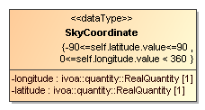
Figure Example of a constraint applied to a type. Here the language is pseudo code, where self follows the way OCL allows expressions to refer to the instance of the type.
VO-DML/Schema
The XML schema only defines Constraint with a description element, which MUST be used to define the constraint expression as a human readable string, or possibly pseudo code if so desired.
<xsd:complexType name="Constraint">
<xsd:sequence>
<xsd:element name="description" type="xsd:string"
minOccurs="0"/>
</xsd:sequence>
</xsd:complexType>VO-DML/XML
<dataType>
<vodml-id>source.SkyCoordinate</vodml-id>
<name>SkyCoordinate</name>
...
<constraint>
<description>-90<=self.latitude.value<=90</description>
</constraint>
<constraint>
<description>0<=self.longitude.value < 360</description>
</constraint>
<attribute>
<vodml-id>source.SkyCoordinate.longitude</vodml-id>
<name>longitude</name>
...
</attribute>
<attribute>
<vodml-id>source.SkyCoordinate.latitude</vodml-id>
<name>latitude</name>
...
</attribute>A special class of constraints is defined for those restricting the possible values of Roles defined on a type.
VO-UML
To define constraints on a Role, VO-UML uses UML's built-in <<subsets>> concept. I.e. one MUST redefine the Role, but declare it to be subsetting a role on the super-type. The datatype of the constrained Role must be a subtype of its declared datatype. For clarity of interpretation the redefined Role SHOULD use the same name, but when deriving VO-DML/XML from the UML, the name is ignored (though it may be used when generating the vodml-id for the role).
Other features of the constrained role may also be redefined as long as the redefinition constrains the original set of values that is allowed on the constrained Role.
The diagram shows subsetting of attributes. Here we make an extension to the sample model where we pretend we have an AbstractSource that is extended by 2 concrete sources, from the SDSS and 2MASS catalogues. These subset the positionError attribute inherited from the super type.
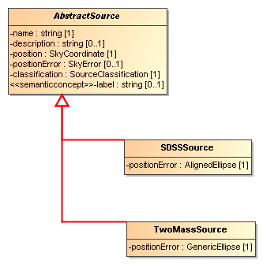
Figure : Example of subsetting of a Role, here the Attribute 'positionError'. In the super type it is of type SkyError, in the sub-types SDSSSource and TwoMassSource subsetted to AlignedEllipse and GenericEllipse respectively, both of which extend SkyError.
VO-DML/Schema
<xsd:complexType name="SubsettedRole">
<xsd:complexContent>
<xsd:extension base="Constraint">
<xsd:sequence>
<xsd:element name="role" type="ElementRef"/>
<xsd:element name="datatype" type="ElementRef"
minOccurs="1"/>
<xsd:element name="semanticconcept" type="SemanticConcept"
minOccurs="1"/>
</xsd:sequence>
</xsd:extension>
</xsd:complexContent>
</xsd:complexType>VO-DML/XML
<objectType>
<vodml-id>catalog.SDSSSource</vodml-id>
<name>SDSSSource</name>
<extends>
<vodml-ref>sample:catalog.AbstractSource</vodml-ref>
</extends>
<constraint xsi:type="vo-dml:SubsettedRole">
<role>
<vodml-ref>
sample:catalog.AbstractSource.positionError
</vodml-ref>
</role>
<datatype>
<vodml-ref>sample:catalog.AlignedEllipse</vodml-ref>
</datatype>
</constraint>
</objectType>Since Type only has a constraint collection of type Constraint, in the XML one must use the xsi:type mechanism to indicate that a particular sub-type is used, here vo-dml:SubsettedRole.
Identifies the role that is subsetted. This Role MUST be available on the type owning the constraint, i.e. it MUST be defined on the type itself or on one of its super-types.
The datatype element can be used to indicate that the datatype of the subsetted Role MUST be a sub-type of the datatype declared for the Role itself. In the interpretation of Type-s as sets of instances, subtypes define subsets, which explains the name of this element. This is a common design pattern and directly borrowed from UML, where it is used as stereotype on a redefinition of the role. We use a special Constraint to support the same concept. Redefining the Role would require defining a new vodml-id. This would complicate the implementation of simple clients that look for instances of the Role, but are agnostic about the precise type of the owning Type.
The super type may have defined a semantic concept for the Role or not. This attribute allows either to define the assignement of semantic concept to the subtype in the latter case or to restrict the values to a narrower concept than that assigned to it on the super-type when the role on the supertype already has a semantic concept with a topConcept defined on it. But also, when the Role on the super-type already has a semanticconcept with a topConcept defined on it, the subtype may restrict the values to a narrower concept than that assigned to it on the super-type.
Ultimately all types in a VO-DML model are defined as hierarchies of primitive types. This spec defines a special, predefined model (with name='ivoa') that contains a set of the most common of such types: integer, real, string etc. This model SHOULD be imported by all other models and its types SHOULD be used for the leaf attributes of object types and data types, or as ultimate super-types of custom primitive types. The use of such a standardized model and its types provides interoperability between models and allows the definition of standard serialization strategies. By defining these as types in a model, rather than predefined enumeration for example, modelers can create their own extensions and specializations through inheritance. These can then in principle still be recognized by interpreters that understand the common base model.
Apart from the primitive types, the ivoa model also defines some structured data types for representing quantities, values with units. Making these part of the standard allows one to make some special arrangements for mapping quantity-like attributes to FIELD-s and PARAM-s in VOTable and is used in the Mapping specification [3].
The diagram in Figure 21 shows the types defined in this model. Its formal VO-DML/XML representation can be found in
http://www.ivoa.net/xml/VODML/IVOA-v1.vo-dml.xml.
Note, the vodml-id of all types exactly follow the generation rules in Appendix C. E.g. to refer to the 'string' type one should always use the vodml-ref 'ivoa:string'
Figure VO-UML diagram with the types from the basic 'ivoa' data model.
Note that the numeric types in this model are defined to correspond to the mathematical number typesℕ, ℤ, ℚ, ℝ and ℂ, rather than to a serialization format understandable to standard programming languages or database systems. Hence it contains only 'integer' rather than (4 byte) 'int', (2 byte) 'short', and/or (8 byte)'long'. Similarly it contains 'real' rather than 'float' or 'double( precision)'. This allows one to assign types to an attribute based on its semantics, rather than on application specific considerations. When using the model to annotate instances in a serialization, or representing its types in software, concrete types will have to be used. One may expect that these should be compatible with the datatype of the attribute, but any possible formal restrictions on the serializations of these types are beyond the scope of this specification and are deferred to a possible mapping specification.
Here we list the types and describe them.
Represents integers>=0, elements of ℕ.
Represents all integers, elements of ℤ.
Represents all rational numbers, elements of ℚ. A serialization format is not specified for this datatype that is not commonly encountered in computer languages.
Represents all real numbers, elements of ℝ.
Represents all complex numbers, elements of ℂ. A serialization format is not specified.
The standard datatype representing the logical values true and false. In serializations these may be represented in different ways such as 0 and 1 or T and F for example.
Represents a point in time. Will generally need time frame and units in the serialization. Can also be used for Attributes just needing a time without a date part and vice versa.
A standard string type, consisting of zero or more characters. We define string as a primitive type (such as in Java), rather than as an array of characters (as in VOTable for example).
A special subtype of string representing uniform resource identifiers37. Inspired by XML-Schema's anyURI38 type.
A string representing a unit following the IVOA specification in [27] for representing units as strings.
A number with a unit. We predefine this type and its two sub-types to represent the pattern that in scientific data models numerical values very often will have to be represented by a literal number and a unit. A particular motivation for defining this concept in the base model is its use in the mapping specification, which allows mapping of these structured DataType-s directly to single FIELDs or PARAMs. Here the unit specified on those VOTable elements is assumed to be mapped to the unit on the Quantity Attribute.
This attribute represents the unit that is to be assigned to the numerical value. The unit must be a string conforming to the unit specification represented by the ivoa:Unit type.
A quantity representing an integer value with a unit.
The attribute holding on to the numerical value for this Quantity. This value must be an ivoa:integer.
A quantity where the value is a real number.
The attribute holding on to the numerical value for this Quantity. This value must be an ivoa:real.
A data model specified in VO-DML can be endorsed by the IVOA to become a standard data model. A standard data model consists of at least three artifacts:
A standard text adopted by the IVOA according to the rules laid down in the IVOA document standard [30]. This must at least discuss use cases and the general design of the model. The level of detail to which individual data model items are discussed in the standard text is up to the authors. The authoritative source on these details always is the VO-DML/XML source. When adding UML-like diagrams or diagram snippets in this text, it strongly suggested that modelers use the VO-UML examples as described in Appendix A and used in examples throughout the current document.
The data model itself, written in VO-DML/XML, which MUST conform to the VO-DML schema39 and the rules in the VO-DML Schematron file40.
A detailed documentation in HTML format containing human-readable definitions for all elements of the data model, formatted in HTML and furnished with HTML-accessible anchors (a/@name or @id attributes) for the vodml-refs contained in the data model. The intent is that the data model URL with an element's vodml-id as a fragment identifier will lead to element-specific documentation.
When a standard data model reaches the status of Proposed Recommendation, the VO-DML document and the HTML are made available in the IVOA document repository at their final URLs. They may, however, be modified there without further notice until the document reaches REC status.
At the same time, a StandardsRegExt [31] document for the standard is uploaded to (or, for updated models, updated in) in the Registry. Additionally, registry records for the data model(s) contained in a standard must be uploaded to (or updated in) the registry. This record must be of the type vodm:DataModel, where vodm is the canonical prefix assigned to the namespace
http://www.ivoa.net/xml/DataModel/v1;
As usual for VO schema files produced by the IVOA, retrieving the namespace URL yields the current schema file.
The identifiers for IVOA data model records should be of the form
ivo://ivoa.net/std/<dmname>dm.
In addition to basic VOResource metadata, DataModels define the following extra metadata in direct children of the resource element:
dm-prefix - The prefix claimed by the model.
dm-uri - The URI at which to retrieve the VO-DML definition of the model.
In RegTAP, these pieces of data are kept in the rr.res_details table with keys formed in parallel to those defined in RegTAP; hence, prefixes are found under /dm-prefix, URI is under /dm-uri. For instance, to retrieve a data model URI for a given prefix, the corresponding RegTAP query would be:
SELECT b.detail_value
FROM rr.res_detail AS a
JOIN rr.res_detail AS b USING (ivoid)
WHERE a.detail_xpath='/dm-prefix'
AND a.detail_value='ivoa'
AND b.detail_xpath='/dm-uri'
The standard(s) that define the data model SHOULD be given in an IsSupplementTo relationship.
Note that this allows Registry clients to support use cases like:
Locate the specification for a data model based on either prefix or URI
Ascertain that a chosen prefix is not being used by another data model
Find the URI for a DM prefix.
Data providers can register their application-specific data models without going through an IVOA review process. In that case, only two artifacts have to be publicly available, preferably on a web server under the provider's control:
The data model itself, written in VO-DML.
A detailed documentation in HTML format containing human-readable definitions for all elements of the data model, formatted in HTML and furnished with HTML-accessible anchors (a/@name or @id attributes) for the vodml-refs contained in the data model. The intent is that the data model URL with an element's vodml-id as a fragment identifier will lead to element-specific documentation. It is recommended to generate this HTML document from the VO-DML using the vo-dml2html.xsl script documented on the IVOA wiki:
http://wiki.ivoa.net/twiki/bin/view/IVOA/VodmlResources.
As in 6.1 , the party defining the data model constructs a DataModel-typed registry record defining dm-prefix and dm-uri. Again, a document giving motivation, use cases, and the like SHOULD be given in an isSupplementTo relationship. The registry record can be uploaded through any publishing registry.
Non-normative guidelines how to build a model, and criteria on what makes a "good" model.
Decide why one wants to create a data model, what is its goal. This includes defining what kind of data model should be created. Default goal for any IVOA data model should be that it allows existing and future databases to describe their contents (at least partially) in terms of the model, which should serve as what is often called a global schema. In certain cases a model may be developed to provide support for a particular application area, for example when defining a data access protocol. Here one can decide to support faithful serialization of data models in targeted XML documents as well as annotated serialization in VOTable. Such models may not necessarily be reusable, but often they can be seen as derivations of, views of, one or more fundamental data models that were defined for reusability purposes.
Decide on universe of discourse: what concepts must be described? How rich should the model be?
Create a conceptual/logical model. In drawings on whiteboard ("VO-UML"), then transcribe to VO-DML/XML. Define concepts completely, realizing that applications may pick and choose and transform.
Sometimes, in application contexts: derive one or more physical representations. Use as much as possible standard, if possible automated derivation methods of VO-DML to target representation.
Abiteboul etal 2011 Web Data Management
Online version at http://webdam.inria.fr/Jorge/files/wdm.pdf )
Ullman, Information Integration Using Logical Views
ICDT ’97 Proceedings of the 6th International Conference
on Database Theory p19-40. Springel-Verlag London, UK ©1997. http://ilpubs.stanford.edu:8090/154/1/1996-28.pdf
Standard serialization of Data Models in VOTable, in preparation. Follow progress on DM working group page http://wiki.ivoa.net/twiki/bin/view/IVOA/IvoaDataModel
VOTable Format Definition Version 1.3
http://www.ivoa.net/documents/VOTable/20130920/
Table Access Protocol Version 1.0
http://www.ivoa.net/documents/TAP/20100327/
An IVOA Standard for Unified Content Descriptors Version
1.10
http://www.ivoa.net/documents/latest/UCD.html
The UCD1+ Controlled Vocabulary Version 1.23
http://www.ivoa.net/documents/cover/UCDlist-20070402.html
Simulation Data Model Version 1.0
http://www.ivoa.net/documents/SimDM/20120503/index.html
Referencing STC in VOTable
http://www.ivoa.net/documents/Notes/VOTableSTC/
http://www.omg.org/spec/UML/2.4.1/Superstructure/PDF/
Gray etal 2009 Vocabularies in the Virtual
Observatory
IVOA recommendation 07 October 2009, http://www.ivoa.net/documents/latest/Vocabularies.html
RDF-Schema: http://www.w3.org/TR/rdf-schema/
Object Constraint Language http://www.omg.org/spec/OCL/2.4/PDF2.4/PDF
Utypes: current usages and practices in the IVOA http://www.ivoa.net/documents/Notes/UTypesUsage/index.html
Simple Spectral Access Protocol Version 1.1 http://www.ivoa.net/documents/SSA/
XML Schema Part 2: Datatypes Second Edition http://www.w3.org/TR/xmlschema-2/
Observation Data Model Core Components and its Implementation in the Table Access Protocol Version 1.0 http://www.ivoa.net/documents/ObsCore/20111028/index.html
Meilir Page-Jones Fundamentals of Object-Oriented Design in UML Addison-Wesley 2000.
Units in the VO Version 1.0 http://www.ivoa.net/documents/VOUnits/index.html
IVOA Identifiers, version 2.0
http://www.ivoa.net/documents/IVOAIdentifiers/
XML Schema Versioning Policies Version 1.0
http://www.ivoa.net/documents/Notes/XMLVers/20160906/PEN-schemaVersioning-1.0-20160906.pdf
IVOA Document Standards Version 1.2 http://www.ivoa.net/documents/DocStd/20100413/
Standards RegExt: a VOResource Schema Extension for
Describing IVOA Standards Version 1.0
http://www.ivoa.net/documents/StandardsRegExt/
The following table summarizes the relation between VO-DML and UML. It lists for each major VO-DML concept the corresponding UML concept or concepts and, where appropriate, gives the graphical symbol that SHOULD be used in VO-UML. The UML concepts, generally referred to as MetaClasses, have a reference to a paragraph in the UML specification version 2.4.1 [13] and are also hyperlinked to a more readable definition in www.uml-diagrams.org. Below the table we discuss some UML meta-types that we have not included in VO-DML and motivate our decision.
| VO-DML concept | Relevant UML MetaClass(es) | VO-UML graphical notation |
|---|---|---|
| Model | Model §17.3.1 |
|
| ModelImport |
Model §17.3.1 PackageImport §7.3.40 ElementImport §7.3.15 |
|
| ReferableElement | NamedElement §7.3.34 | |
| Package | Package §7.3.38 | 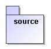 |
| Type |
Type §7.3.52 Classifier §7.3.8 |
|
| Type.extends | Generalization §7.3.20 |

|
| ObjectType | Class §7.3.7 |
|
| ValueType | DataType §7.3.11 | |
| DataType | DataType §7.3.11 |

|
| PrimitiveType | PrimitiveType §7.3.44 |

|
| Enumeration | Enumeration §7.3.16 |
|
| EnumLiteral | EnumerationLiteral §7.3.17 | See Enumeration above |
| Role |
Feature §7.3.19 StructuralFeature §7.3.50 TypedElement §7.3.53 Property §7.3.45 |
|
| Attribute | Property §7.3.45 | See ObjectType and DataType above. |
| Relation |
Association §7.3.3 Property §7.3.45 |
|
| Reference |
Association §7.3.3 Property §7.3.45 |

|
| Composition |
Association §7.3.3 Property §7.3.45 AggregationKind §7.3.2 |

|
| Multiplicity | Multiplicity § | See annotation in diagram for attributes, reference, composition |
| Constraint | Constraint §7.3.10 | |
| SubsettedRole | Property.subsettedProperty, Propery.redefinedProperty §7.3.45 | |
| SemanticConcept |
<<semanticconcept>> with tags:
topConcept |
UML meta-classes not included in VO-DML
Aggregation
A common question is why UML's Aggregation meta-class (see §7.3.2 and §7.3.3) has not been included in VO-DML. Aggregation is a kind of shared relationship between a whole and a part. It is "shared" in that the part can be a part in multiple "wholes" at the same time, in contrast to a composition relationship. Consequently the part's life cycle is not tied to that of any "whole".
In UML this relation is represented graphically by a line with an open diamond as in Figure 22.

Figure UML Aggregation relationship.
We have excluded Aggregation for the following reasons
In virtually all situations an aggregation can be represented by the pattern illustrated in Figure 23. In fact, in almost all cases we have encountered where an aggregation was used, the relation between the types A and B was actually better modelled by that pattern as more attributes were desirable to describe the relation in more detail; i.e. it needed a separate type to represent the relation fully.
The representation of the shared aggregation pattern in a relational database, arguably an important use case, requires a separate table playing basically the role of the type AB in Figure 23. This is in contrast to the case of the composition relationship, where a foreign key from part-to-whole is the natural representation. To make the mapping explicit, it is useful to enforce that types exist also in VO-DML. This is especially important if we wish to be able to annotate such a database pattern with data model information. There it is useful if each element in the physical representation has a 1-1 relation to an element in the model.
The wish to keep the language as simple and non-redundant as possible. This is obviously convenient for clients of the model, which require less code to take care of all cases. When different methods exist to implement the same pattern, different choices will be made, with the possibility of confusion and the need for clients that are more sophisticated. In the case of Aggregation moreover it has been noticed that it is prone to errors in the model, inducing inexperienced modelers to ignore important model components.

Figure VO-DML aggregation pattern.
Summarizing, there is only a very small percentage of cases where aggregation would really be sufficient. It seems never necessary. In those cases where it would be used it would obfuscate the relationship between the model and arguably its most important physical representation, namely relational databases. It adds redundancy to a language that for many first-time users is hard enough to use as it is, and would complicate the work of coders of client software. That in some cases an extra type must be added to a model was considered a small price to pay for these advantages.
Double inheritance
VO-DML does not support multiple inheritance. In this it follows computer languages such as Java and C# (though not C++ or Python) and XML schema. The main aim of our restriction is to promote simplicity of mapping models to important serializations and trying to limit the abuse of inheritance that even with single inheritance is very common (see e.g. Chapter 12 in [26]).
This appendix contains examples how one might map a VO-DML data model to a physical representation format described by its own meta-model. These mappings aim to be as close to 1-1 as possible, providing so called faithful representations of the model. Developing standards for mappings to languages like these could greatly simplify a modeling process, as one need only define the conceptual model itself and use automated procedures to derive the serialization formats.
XSD
| VO-DML concept | XSD concept |
|---|---|
| ObjectType | complexType |
| DataType | complexType |
| Enumeration | simpleType with restriction list elements for the EnumLiterals |
| PrimitiveType | simpleType, possibly with restriction |
| Attribute | element on complexType, type corresponding to mapping of datatype |
| Composition | element on complexType, type corresponding to mapping of datatype |
| Reference | element on complexType, type must be able to perform remote referencing, possibly an xlink, or an element of a special purpose type designed for referencing. |
| Type.extends | xsd:extension for ObjectType and DataType, xsd:restriction for PrimitiveType and Enumeration. |
| Package | targetNamespace if each package is defined in its own document. |
Relational databases
Follow typical Object-Relational mapping rules.
| VO-DML concept | RDB concept |
|---|---|
| ObjectType | Table |
| DataType | Used as data type of Attributes, mapped to one or more Columns in a Table. |
| Enumeration | Used as data type of Attributes, mapped to one Column in a Table |
| PrimitiveType | Used as data type of Attributes, mapped to one Column in a Table |
| Attribute | One or more Columns in a Table depending on datatype |
| Composition | Foreign key from child to parent Table |
| Reference | Foreign key from referrer to referent. |
| Type.extends | Depending on inheritance mapping strategy41 this can be a foreign key from a Table representing the sub-type to the one representing the base type. Or may lead to sub-type Columns being added to table for super-type. |
| Package | Could be mapped to a Schema, but should have no nested packages as nesting of schemas is not supported in RDBs. |
Java
VO-DML maps pretty much 1-1 to an OO language like Java. An automated generation of Java classes is very well possible as show by the VO-URP proto-type used in the Simulation Data Model [8] effort.
| VO-DML concept | Java concept |
|---|---|
| ObjectType | class |
| DataType | class |
| Enumeration | enum |
| PrimitiveType | Appropriate built in primitive type (int, boolean, float, etc) or corresponding class, otherwise a custom class. |
| Attribute | Attribute in class of appropriate type. |
| Composition | Collection<T> attribute on parent class, with T the type corresponding to the child type. |
| Reference | Attribute in class of Java type corresponding to the data type of the reference. |
| Type.extends | class <sub-type> extends <super-type> |
| Package | Java package, hierarchical with maybe some root package representing the model. |
The only requirement on the <vodml-id> identifying model elements is that it is unique within the context of the model. However, it may be useful for such IDs to be human-readable, so to intuitively provide information about the elements they identify. This specification states that vodml-id SHOULD be made human-readable according to specific rules that represent the location of the identified element in the model, encoded in the grammar presented below.
In the past42 rules have been defined for generating such unique identifiers for elements in a data model, and the following grammar is built starting from that previous attempt. Note that uniqueness depends on rules on the uniqueness of names in a particular context, here represented by a location in a hierarchy:
vodml-id := package-vodml-id | type-vodml-id |
attribute-vodml-id | composition-vodml-id |
reference-vodml-id | container-vodml-id
package-vodml-id := <package-name>
["." <package-name>]*
type-vodml-id := [package-vodml-id "."] <type-name>
attribute-vodml-id := type-vodml-id "." <attribute-name>
composition-vodml-id :=
type-vodml-id "." <composition-name>
reference-vodml-id := type-vodml-id "." <reference-name>
container-vodml-id := "vo-dml:Object.CONTAINER"
vodml-ref := <model-name> ":" vodml-idThe grammar for the vodml-ref reference to an element identified by the vodml-id identifier is also included above for convenience.
The various examples used as illustration in the main text are all extracted from a very simple data model for Astronomical Sources that will hopefully not be too strange to the readers. It has a VO-UML representation reproduced in Figure 24. Links to its VO-DML/XML representation and also other derived products can be found at http://wiki.ivoa.net/twiki/bin/view/IVOA/VodmlResources.
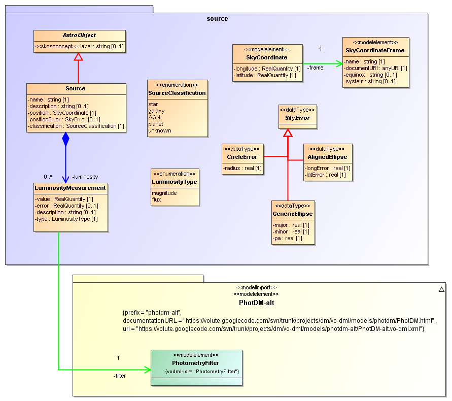
Figure Simple Source data model used for illustrations in this document.
The Registry extension for registering a data model.
<?xml version="1.0" encoding="UTF-8"?>
<xs:schema targetNamespace="http://www.ivoa.net/xml/DataModel/v1"
xmlns:xs="http://www.w3.org/2001/XMLSchema"
xmlns:vr="http://www.ivoa.net/xml/VOResource/v1.0"
xmlns:vodm="http://www.ivoa.net/xml/DataModel/v1"
xmlns:vm="http://www.ivoa.net/xml/VOMetadata/v0.1"
elementFormDefault="unqualified" attributeFormDefault="unqualified"
version="1.0" >
<xs:annotation>
<xs:appinfo>
<vm:schemaName>DataModel</vm:schemaName>
<vm:schemaPrefix>xs</vm:schemaPrefix>
<vm:targetPrefix>vodm</vm:targetPrefix>
</xs:appinfo>
<xs:documentation>
This schema defines a type for registering data models written
in the VO-DML modelling language.
</xs:documentation>
</xs:annotation>
<xs:import namespace="http://www.ivoa.net/xml/VOResource/v1.0"
schemaLocation="http://www.ivoa.net/xml/VOResource/v1.0"/>
<xs:complexType name="DataModel">
<xs:annotation>
<xs:documentation>
a VO-DML-based data model.
</xs:documentation>
<xs:documentation>
In addition to usual resource metadata, this defines the prefix
and the URI at which to retrieve the formal data model definition.
DataModels should have IsSupplementTo relationships to their
definining standard.
</xs:documentation>
</xs:annotation>
<xs:complexContent>
<xs:extension base="vr:Resource">
<xs:sequence>
<xs:element name="capability" type="vr:Capability"
minOccurs="0" maxOccurs="unbounded">
<xs:annotation>
<xs:documentation>
a description of a capability in connection
with the data model.
</xs:documentation>
<xs:documentation>
This could include validators, online converters,
or similar facilities.
</xs:documentation>
</xs:annotation>
</xs:element>
<xs:element name="dm-prefix" type="xs:string"
minOccurs="1" maxOccurs="1">
<xs:annotation>
<xs:documentation>
the prefix clamined by the datamodel, including a
training colon.
</xs:documentation>
<xs:documentation>
Each data model can only claim one prefix. Before
claiming a prefix, a search in the VO Registry must
ascertain that the prefix is not claimed by another
data model.
</xs:documentation>
</xs:annotation>
</xs:element>
<xs:element name="dm-uri" type="xs:string"
minOccurs="1" maxOccurs="1">
<xs:annotation>
<xs:documentation>
The URI of the VO-DML definition of the data model.
</xs:documentation>
<xs:documentation>
This URI should be constant by major version of the
standard; see the VO-DML REC for deployment advice.
</xs:documentation>
</xs:annotation>
</xs:element>
</xs:sequence>
</xs:extension>
</xs:complexContent>
</xs:complexType>
</xs:schema>The following is an example of a vodm:DataModel registry record. Such records are used to claim VODML prefixes and associate them with DM URIs. The example is written to match the ivoa base model defined in section 5 . Note that the record for the model that is actually in the VO Registry may be different from this.
<!-- A registry record defining the ivoa data model contained in this
standard -->
<ri:Resource
xsi:type="vodm:DataModel"
created="2017-07-24T09:00:00"
updated="2018-05-19T09:00:00"
status="active"
xmlns:vr="http://www.ivoa.net/xml/VOResource/v1.0"
xmlns:vodm="http://www.ivoa.net/xml/DataModel/v1"
xmlns:xsi="http://www.w3.org/2001/XMLSchema-instance"
xmlns:ri="http://www.ivoa.net/xml/RegistryInterface/v1.0"
xsi:schemaLocation="http://www.ivoa.net/xml/VOResource/v1.0
http://www.ivoa.net/xml/VOResource/v1.0
http://www.ivoa.net/xml/DataModel/v1
http://www.ivoa.net/xml/DataModel/v1
http://www.ivoa.net/xml/VOResource/v1.0
http://www.ivoa.net/xml/VOResource/v1.0">
<title>The ivoa data model</title>
<identifier>ivo://ivoa.net/std/ivoadm</identifier>
<curation>
<publisher>IVOA</publisher>
<creator>
<name>Lemson, G.</name>
</creator>
<creator>
<name>Laurino, O.</name>
</creator>
<creator>
<name>Bourges, L.</name>
</creator>
<creator>
<name>Cresitello-Dittmar, M.</name>
</creator>
<creator>
<name>Demleitner, M.</name>
</creator>
<creator>
<name>Donaldson, T.</name>
</creator>
<creator>
<name>Dowler, P.</name>
</creator>
<creator>
<name>Graham, M.</name>
</creator>
<creator>
<name>Gray, N.</name>
</creator>
<creator>
<name>Michel, L.</name>
</creator>
<creator>
<name>Salgado, J.</name>
</creator>
<!-- this should be the date of the last recommendation -->
<date role="update">2018-05-19</date>
<version>1.0</version>
<contact>
<name>IVOA Data Models WG</name>
<email>dm@ivoa.net</email>
</contact>
</curation>
<content>
<subject>Virtual observatory</subject>
<description>
Ultimately all types in a VO-DML model are defined as hierarchies
of primitive types. This Model defines a special, predefined model
that contains a set of the most common of such types: integer,
real, string etc. This
</description>
<referenceURL>http://ivoa.net/documents/VODML/</referenceURL>
<type>Other</type>
<contentLevel>Research</contentLevel>
<relationship>
<relationshipType>isSupplementTo</relationshipType>
<relatedResource ivo-id="ivo://ivoa.net/std/VODML"
>VO-DML: a consistent modeling language for IVOA data
models</relatedResource>
</relationship>
</content>
<dm-prefix>ivoa</dm-prefix>
<dm-uri>http://www.ivoa.net/dm/ivoa.vo-dml.xml</dm-uri>
</ri:Resource>Version 20161222
Added this changelog
Added \- to the ModelName definition
Renamed and updated section on registering and referring to data models based on discussions with registry chair.
Moved IVOA model from appendix to normative section 5
Version 20170507
Updated section 6.2 after comments from registry chair
Added uri attribute to Model.
Added various references
Version 20170925
Updated urls to only have major version.
Changed reference to mapping model to "in progress", referring to DM WG page.
Proposal text by Markus Demleitner's used for sections 6.1 and 6.2
Added proposed registry extension in Appendix F and sample registry record for the ivoa model in appendix G
Appendix E contains the registry record for the VO-DML standard itself.
Version 20180227
Updated URLs, removing references to volute documents, pointing where required to a landing page on the IVOA-wiki
Changed text on rational and complex to conform to them becoming primitive types
Version 20180505
Added explicit statement regarding case-sensitivity of vodml-id and vodml-ref.
Various fixes of types, restatements to make things clearer and other changes inspired by the TCG comments on the RFC page.
http://en.wikipedia.org/wiki/Standard_data_model↩︎
http://www.ivoa.net/↩︎
For the use of the view concept in data and information integration see [2].↩︎
Note, in this document, we use the term TAP_SCHEMA for the way metadata about a TAP service is represented, not necessarily only about the actual TAP_SCHEMA tables.↩︎
Note that a separate specification is in preparation to define how precisely to map data models to VOTables. That specification does actually not use the utype attribute, but introduces a new <VODML> element that is more expressive and tuned to the VO-DML language.↩︎
In particular graphical UML tools such as Modelio, MagicDraw or Altova Umodel.↩︎
This work again is not complete, but an earlier version of VO-DML was used to generate XSD and RDB representations used in proof-of-concept implementations for the the Simulation Data model specification[8]. which gave rise to the VO-URP framework to generate a complete set of representations.↩︎
http://www.uml-diagrams.org/profile-diagrams.html↩︎
http://www.schematron.com/↩︎
XML Schema was chosen as the core language for VO-DML/XML, as it was felt it is more familiar to the IVOA community than Schematron.↩︎
All formal references are to version 2.4.1 of the UML spec, though the components used in VO-DML are standard since at least version 2.0.↩︎
Not all UML concepts have a graphical representation.↩︎
http://schema.omg.org/spec/UML/2.0. The graphical elements are available in both UML 2.0 and 2.4.1, but MagicDraw CE 12.1 only supported 2.0.↩︎
http://schema.omg.org/spec/XMI/2.1.↩︎
See http://www.uml-diagrams.org/profile-diagrams.html#profile↩︎
It should once more be made clear that the current spec does not mandate the use of some particular UML modeling tool. But a UML representation different from VO-UML MUST NOT be used to define an IVOA data model without an explicit mapping to VO-DML.↩︎
E.g. as VO-DML does not allow multiple inheritance, the UML diagrams should not use this feature either.↩︎
For example Attribute is contained by both ObjectType and DataType and Package contains itself. As this meta-model is not supposed to be a model of a data structure, but of a language, and moreover since the diagram is meant for illustration only, this should not give rise to confusion.↩︎
The reference to the UML specification [13] will be left out from now on.↩︎
Rather than just the container of its content.↩︎
http://www.uml-diagrams.org/package-diagrams/model.html↩︎
But see ModelImport.↩︎
See section 6 on registration of data models below for more details.↩︎
One reason for this is that the ModelImport element will define both the name of the model that is used as prefix in vodml-ref elements, and the remote location of the model's VO-DML/XML representation.↩︎
and evidently confusing for non-initiated.↩︎
This is admittedly a somewhat theoretical but important object-oriented concept.↩︎
This does not mean that one cannot have serialized representations of child objects without their parent. This purely depends on the serialization format and possibly the query producing the result.↩︎
One may also say the parent has a collection of the child type, or that the parent contains the child type.↩︎
In the relational model a composition relation is generally represented by a foreign key form the table representing the child to the table representing the parent. See also Appendix B.2.↩︎
This is one way in which one might represent a UML aggregation relationship, but preferably aggregation should be implemented using the pattern described in A.1 and illustrated in Figure 23.↩︎
https://tools.ietf.org/html/rfc3986↩︎
http://www.w3.org/TR/xmlschema-2/#anyURI↩︎
http://www.ivoa.net/xml/VODML/vo-dml-v1.xsd↩︎
E.g. see http://en.wikibooks.org/wiki/Java_Persistence/Inheritance↩︎
The Simulation Data Model [http://ivoa.net/documents/SimDM/20120503] provided such a grammar for the first time for the list of utypes accompanying that model.↩︎